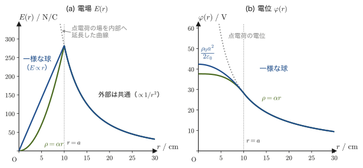
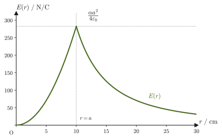
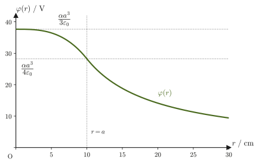
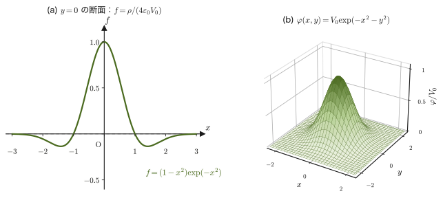
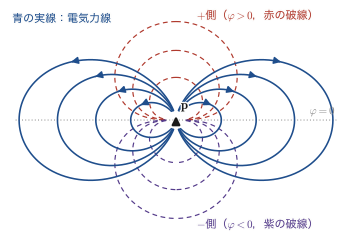

第36章電位とコンデンサー
前章（第35章）では，電荷のまわりにできる電場 $\bm E$ を，クーロンの法則とガウスの法則という2通りの方法で求めた．電場はベクトル量であり，各点で大きさと向きの両方を指定しなければならない．しかし，高校物理で「電位（電圧）」という量を習ったときのことを思い出してほしい．電位はただの数（スカラー）なのに，電場の情報をまるごと含んでいる——電位さえ分かれば，そこから電場を計算し直すことができる．この「向きを持つ量（電場）」を「向きを持たない量（電位）」だけから作り出せる仕組みこそ，本章の主題である．
実はこれと同じ仕組みに，諸君はすでに力学で出会っている．保存力 $\bm F$ の場のもとでは，位置エネルギー（ポテンシャルエネルギー）$U$ という1つのスカラー量を定めることができ，$\bm F=-\nabla U$ という関係で力そのものを取り出せた（第4章4.4節）．電位 $\varphi$ は，まさに電場という保存力場に対する「1電荷あたりの位置エネルギー」にほかならない．高校物理で「$V=Ed$」「電位は無限遠を基準に$0$」というふうに公式として覚えた式が，この一般的な枠組みのごく特別な場合であったことを，本章で確認していく．
電位という考え方が実際に役立つ最大の場面が，電荷を蓄える装置——コンデンサー（キャパシタ，capacitor）である．スマートフォンのタッチパネル，カメラのフラッシュ，電子回路のノイズ除去，さらにはコンピュータの半導体メモリの1ビット1ビットまで，コンデンサーは身の回りのあらゆる電子機器に使われている．コンデンサーの性能を決める電気容量という量も，本章で学ぶ電位の計算があってはじめて求められる．
- 電位 $\varphi$ の定義，電位差（電圧）$V=\varphi_B-\varphi_A=\displaystyle\int_B^A\bm E\cdot\dd\bm r$（電場の線積分），静電場が電荷にする仕事 $W_{BA}=q(\varphi_B-\varphi_A)$ の関係，電位には定数の不定性（基準点の選び方）があること
- 一様な電場の電位 $V=Ed$ の導出と，無限遠を基準にした点電荷の電位 $\varphi(r)=\dfrac{1}{4\pi\varepsilon_0}\dfrac{Q}{r}$，ポテンシャルエネルギー $U=\dfrac{1}{4\pi\varepsilon_0}\dfrac{qQ}{r}$
- ガウスの法則を使った電場の計算の総仕上げ——無限平面・無限直線・一様に帯電した球・密度が $\rho=\alpha r$ の球の内外の電場と電位（例題36.4〜36.8），無限遠を基準にできない場合の基準点の選び方（例題36.6）
- 平行平板コンデンサーの公式 $C=\varepsilon_0S/d$ と静電エネルギー $U=\tfrac12CV^2$ の導出，電場のエネルギー密度 $u=\tfrac12\varepsilon_0E^2$
- 球形・円柱形コンデンサーの電気容量と，ポアソン方程式 $\nabla^2\varphi=-\rho/\varepsilon_0$ による電位と電荷密度の関係
- 円環・円板のような連続的に分布した電荷が軸上につくる電位・電場の計算と，電気双極子の電位・電場
もとにしたノート：望月泰英『物理学ノート 電磁気学』 pp. 7–12．
36.1 電位差と静電場のする仕事
高校物理では，電位（電圧）を「一様な電場では $V=Ed$」「点電荷のまわりでは $\dfrac{1}{4\pi\varepsilon_0}\dfrac{Q}{r}$」というふうに別々の公式として習い，静電気力による位置エネルギーも $U=qV$，$U=\dfrac{1}{4\pi\varepsilon_0}\dfrac{qQ}{r}$ と書いた．これらはどれも「$1\,\mathrm C$ あたりの位置エネルギー」という同じ量の特別な場合である．本節ではまずその一般的な定義を述べ，36.2節以降でこれらの公式を1つずつ導き直す．
力学における保存力とポテンシャルエネルギーの関係を思い出そう．保存力 $\bm F$ のもとでは，位置エネルギー $U$ を「基準点からその位置まで運ぶのに，力に逆らってする仕事」として定義でき，$\bm F=-\nabla U$（力はポテンシャルエネルギーの勾配の逆向き）という関係が成り立った（第4章4.4節）．静電場 $\bm E$ も，クーロンの法則からできる中心力の場（1個の点電荷がつくる電場は，電荷を中心とした球対称・放射状のベクトル場である）を重ね合わせたものであり，力学の保存力とまったく同じ性質を持つ——電場を「1電荷あたりの力」とみなしたとき，対応するスカラー関数（1電荷あたりの位置エネルギーにあたるもの）が必ず存在する．これを電位（electric potential）$\varphi$ と呼ぶ．
定義36.1 電位（electric potential）
電場 $\bm E(\bm r)$ に対して，
$$ \bm E=-\nabla\varphi $$を満たすスカラー関数 $\varphi(\bm r)$ を，その点における電位という．単位はボルト（volt）$[\mathrm V]=[\mathrm{J/C}]$（$1\,\mathrm C$ の電荷を運ぶのに $1\,\mathrm J$ の仕事が対応する電位差が $1\,\mathrm V$）．$\nabla$（ナブラ，または「デル」）は勾配ベクトルをつくる演算子である（大学数学 第18章18.4節）．マイナス符号が付くのは，力学の $\bm F=-\nabla U$ と同じ理由——「電位の高いほうから低いほうへ向かう」向きに，正電荷が受ける力（＝電場の向き）が生じるようにするためである．こうした $\varphi$ が実際に存在すること（静電場が保存力場であること）は，すぐ下の「なぜ？」で点電荷の場合に確かめ，重ね合わせで一般の静電場に広げる．一般的な理由は，電磁誘導を学ぶ第40章40.2節で，ファラデーの法則 $\rot\bm E=-\pdiff{\bm B}{t}$ の特別な場合（時間変化のない静電場では右辺が $0$ になる）として改めて確認する．
電位には定数の不定性がある．$\varphi$ に定数 $c$ を加えた $\varphi+c$ も，$-\nabla(\varphi+c)=-\nabla\varphi=\bm E$ を満たす（定数の勾配は $\bm 0$）．したがって，電位の値そのものは「どこを $\varphi=0$ の基準にするか」を決めてはじめて定まり，物理的に意味があるのは2点の電位の差（電位差）である．
なぜ？：点電荷の電場では，線積分が途中の道筋によらない
原点の点電荷 $Q$ がつくる電場は，動径方向を向いていて，大きさが距離 $r=\abs{\bm r}$ だけで決まる：$\bm E=E(r)\,\bm e_r$，$E(r)=\dfrac{1}{4\pi\varepsilon_0}\dfrac{Q}{r^2}$（$\bm e_r=\bm r/r$ は動径方向の単位ベクトル）．$r^2=\bm r\cdot\bm r$ の両辺の微小変化をとると $2r\,\dd r=2\bm r\cdot\dd\bm r$ なので，$\dd r=\bm e_r\cdot\dd\bm r$（微小変位の動径方向の成分が，距離の増加分 $\dd r$ に等しい）．したがって $\bm E\cdot\dd\bm r=E(r)\,\bm e_r\cdot\dd\bm r=E(r)\,\dd r$ となり，点 $B$ から点 $A$ までの線積分は，
$$ \int_B^A\bm E\cdot\dd\bm r=\int_{r_B}^{r_A}E(r)\,\dd r=\frac{Q}{4\pi\varepsilon_0}\left(\frac1{r_B}-\frac1{r_A}\right) $$と，両端の距離 $r_B,r_A$ だけで決まる（途中でどんなに遠回りしても，$\dd r$ を足し合わせた結果は変わらない）．これは $\varphi(r)=\dfrac{Q}{4\pi\varepsilon_0r}+(\text{定数})$ とおいたときの $\varphi_B-\varphi_A$ にほかならない．複数の点電荷や連続的な電荷分布がつくる電場は，点電荷の電場の重ね合わせ（第35章）であり，各項の線積分がそれぞれ経路によらないので，その和も経路によらない．こうして，一般の静電場にも電位 $\varphi$ が存在することが分かる．
電位の定義 $\bm E=-\nabla\varphi$ を使うと，2点の電位の差を，電場の線積分で表すことができる．そのために，まずスカラー場 $\varphi$ の位置を微小変位 $\dd\bm r$ だけ動かしたときの変化量（全微分）が，勾配ベクトルとの内積で書けることを思い出そう（大学数学 第18章18.4節）：
$$ \dd\varphi=\nabla\varphi\cdot\dd\bm r $$これは，多変数関数の全微分 $\dd\varphi=\pdiff{\varphi}{x}\dd x+\pdiff{\varphi}{y}\dd y+\pdiff{\varphi}{z}\dd z$ を，$\nabla\varphi=\left[\pdiff{\varphi}{x},\pdiff{\varphi}{y},\pdiff{\varphi}{z}\right]$ と $\dd\bm r=[\dd x,\dd y,\dd z]$ の内積として書き直しただけのものである．
導出：電位差と電場の線積分の関係
点 $B$ から点 $A$ まで，何らかの経路に沿って電場を線積分する．定義36.1 の $\bm E=-\nabla\varphi$ を代入すると，
$$ \int_B^A\bm E\cdot\dd\bm r=\int_B^A(-\nabla\varphi)\cdot\dd\bm r=-\int_B^A\nabla\varphi\cdot\dd\bm r=-\int_B^A\dd\varphi $$（最後の等号で，上で確認した $\dd\varphi=\nabla\varphi\cdot\dd\bm r$ を使った）．定積分 $\displaystyle\int_B^A\dd\varphi$ は，$\varphi$ の値を $B$ での値から $A$ での値まで足し合わせたものだから，$\varphi_A-\varphi_B$ に等しい（1変数の定積分 $\int_a^b f'(x)\,\dd x=f(b)-f(a)$ の多変数版である）．したがって，
$$ \int_B^A\bm E\cdot\dd\bm r=-(\varphi_A-\varphi_B)=\varphi_B-\varphi_A $$を得る．これは，上端と下端を入れ替えて $-\displaystyle\int_B^A\dd\varphi=\displaystyle\int_A^B\dd\varphi=\varphi_B-\varphi_A$ と書いても同じ内容である．なお，この積分の値は $B$ から $A$ までどの経路を選んでも変わらない（経路独立性，大学数学 第20章20.3節）．これは $\bm E$ が勾配ベクトル場であることの直接の帰結であり，一般の（保存的とは限らない）ベクトル場の線積分では成り立たない特別な性質である．
（導出終わり）
定義36.2 電位差（電圧）
2点 $A,B$ の電位の差 $\varphi_B-\varphi_A$ を，電位差（potential difference）または電圧（voltage）と呼び，本書では文脈から明らかな場合には単に $V$ と書く．式 \eqref{eq:36-potdiff-lineintegral} より，電位差は電場の線積分
$$ \varphi_B-\varphi_A=\int_B^A\bm E\cdot\dd\bm r $$として計算できる．電位差は，（出発点 $B$ の電位）$-$（到着点 $A$ の電位）であり，正電荷が電位の高い点から低い点へ動くとき正になる（次の式 \eqref{eq:36-work-potdiff} のとおり，$1\,\mathrm C$ あたりに電場がする仕事に等しい）．電位の単位が $[\mathrm V]=[\mathrm{J/C}]$ であることから，電場の単位 $[\mathrm{N/C}]$ は $[\mathrm{V/m}]$ とも書ける（例題36.1 で数値を使って確認する）．高校物理で「電圧」と呼んで暗記した量は，まさにこの電位差のことである．
次に，静電場が電荷にする仕事を考えよう．電荷 $q$ が電場 $\bm E$ の中にあるとき，電荷が受ける力は $\bm F=q\bm E$（クーロン力，第35章）である．この電荷が点 $B$ から点 $A$ まで移動する間に，電場からされる仕事は，力学の仕事の定義（第4章4.1節，力と変位の内積を経路に沿って足し合わせたもの）にしたがって
$$ W_{BA}=\int_B^A\bm F\cdot\dd\bm r=q\int_B^A\bm E\cdot\dd\bm r $$である．ここに式 \eqref{eq:36-potdiff-lineintegral} を代入すると，
\begin{equation} W_{BA}=q(\varphi_B-\varphi_A) \label{eq:36-work-potdiff} \end{equation}を得る．すなわち，静電場が電荷にする仕事は，通った経路によらず，出発点と到着点の電位差だけで決まる．正電荷 $q\gt0$ が電位の高い点 $B$ から低い点 $A$ へ移動するとき（$\varphi_B\gt\varphi_A$）は $W_{BA}\gt0$ となり，電場は正の仕事をする——質量が重力によって高いところから低いところへ落ちるときに正の仕事をされるのと，まったく同じ構造である．
例題36.1 一様な電場中の電荷が受け取る仕事
大きさ $E=2.0\times10^3\ \mathrm{N/C}$ の一様な電場の中を，電荷 $q=4.0\ \mu\mathrm C$ の点電荷が，電場と同じ向きに $d=0.50\ \mathrm m$ だけ移動した．(1) 出発点 $B$ と到着点 $A$ の電位差 $\varphi_B-\varphi_A$ を求めよ．(2) 電場が電荷にした仕事 $W_{BA}$ を求めよ．
解答 (1) 一様な電場の中で，電場の向きに沿って距離 $d$ だけ離れた2点の電位差は，36.2節で導く式 \eqref{eq:36-uniform-V} により $\varphi_B-\varphi_A=Ed$ になる（ここでは結果を先取りして数値を計算する）．
$$ \varphi_B-\varphi_A=Ed=(2.0\times10^3\ \mathrm{N/C})\times(0.50\ \mathrm m)=1.0\times10^3\ \mathrm V $$（単位の確認：$\mathrm{N/C}\times\mathrm m=\mathrm{N\cdot m/C}=\mathrm{J/C}=\mathrm V$ で，電位差の単位と一致する．）
(2) 式 \eqref{eq:36-work-potdiff} より，
$$ W_{BA}=q(\varphi_B-\varphi_A)=(4.0\times10^{-6}\ \mathrm C)\times(1.0\times10^3\ \mathrm V)=4.0\times10^{-3}\ \mathrm J=4.0\ \mathrm{mJ} $$（単位の確認：$\mathrm{C\cdot V}=\mathrm{C\cdot(J/C)}=\mathrm J$）．
36.2 一様な電場の電位と無限遠を基準にした電位
電位差の定義（式 \eqref{eq:36-potdiff-lineintegral}）を，具体的な電場の形に当てはめて計算してみよう．まず最も簡単な場合として，大きさ $E$ が一定で向きも変わらない一様な電場を考える．
大きさ $E\,[\mathrm{N/C}]$ の一様な電場の中に，電荷 $q\,[\mathrm C]$（$q\gt0$ とする）の正電荷を置くと，この電荷は大きさ $qE$ の力を電場の向きに受ける．電場の向きに沿って点 $B$ から距離 $d$ だけ離れた点 $A$ まで，力の向きと同じ向きに電荷を動かすと，力学の仕事の定義（力と変位が同じ向きなので，仕事＝力の大きさ×移動距離，第4章4.1節）より，電場がする仕事は
$$ W_{BA}=qE\cdot d $$である．一方，式 \eqref{eq:36-work-potdiff} により，この仕事は電位差を使って $W_{BA}=q(\varphi_B-\varphi_A)=qV$（$V\equiv\varphi_B-\varphi_A$ とおいた）とも書ける．同じ仕事を2通りに表しただけなので，両者は等しい：
$$ qEd=qV\qquad\therefore\ V=Ed $$公式36.1 一様な電場の電位差
大きさ $E$ の一様な電場の向きに沿って距離 $d$ だけ離れた2点の電位差は，
\begin{equation} V=Ed \label{eq:36-uniform-V} \end{equation}である．これは高校物理で「コンデンサーの電圧 $V$，極板間隔 $d$，電場 $E=V/d$」として暗記した公式そのものであり，本章36.6節の平行平板コンデンサーの議論で再び使う．なお，この関係式から，電場の単位は $[\mathrm{N/C}]$ のほかに $[\mathrm{V/m}]$（電位差÷距離）と書いてもよいことが分かる．実際に電場の大きさを表すときには $[\mathrm{V/m}]$ のほうがよく使われる．
次に，一様ではない電場——特に，点電荷のまわりにできるクーロン電場——の電位を求めよう．クーロンの法則（第35章）より，原点に置いた点電荷 $Q$ から距離 $r$ の点における電場の大きさは $E(r)=\dfrac{1}{4\pi\varepsilon_0}\dfrac{Q}{r^2}$ であり，向きは $Q\gt0$ なら原点から遠ざかる向き（動径方向の単位ベクトル $\bm e_r$ の向き）である．この電場は距離とともに $1/r^2$ で急速に小さくなり，$\displaystyle\int_r^\infty E\,\dd r$ が有限の値に収束する（あとで実際に計算する）．そこで，無限遠を電位の基準点（$\varphi_\infty=0$）にとる．（電荷が無限遠まで広がっている場合は，この積分が発散して無限遠を基準にできない．その例は36.4節の例題36.6で調べる．）
導出：点電荷から距離 $r$ の点の電位
式 \eqref{eq:36-potdiff-lineintegral} で $B=\infty$（無限遠），$A$ を原点から距離 $r$ の点とおくと，
$$ \int_\infty^A\bm E\cdot\dd\bm r=\varphi_\infty-\varphi_A=-\varphi_A $$（$\varphi_\infty=0$ を使った）．したがって，$\varphi_A=-\displaystyle\int_\infty^A\bm E\cdot\dd\bm r$ である．積分経路として，無限遠から $A$ まで一直線に（動径方向に）近づく経路をとる——電位は経路によらないので，どの経路を選んでも同じ値になる（36.1節の「なぜ？」で確認したとおり）．この経路上では，電場ベクトル $\bm E$ は経路の接線方向（動径方向）を向いているので，内積 $\bm E\cdot\dd\bm r$ は $E(r')\,\dd r'$ に等しくなる（$r'$ は経路上の各点の原点からの距離を表す積分変数で，点 $A$ で $r'=r$ になる）：
$$ \varphi(r)=-\int_{r'=\infty}^{r'=r}E(r')\,\dd r'=-\int_\infty^r\frac{1}{4\pi\varepsilon_0}\frac{Q}{r'^2}\,\dd r' $$$\dfrac{1}{r'^2}$ の原始関数が $-\dfrac{1}{r'}$ であること（$\dd(-1/r')/\dd r'=1/r'^2$）を使うと，
$$ \varphi(r)=-\frac{1}{4\pi\varepsilon_0}\left[-\frac{Q}{r'}\right]_\infty^r=-\frac{1}{4\pi\varepsilon_0}\left(-\frac{Q}{r}-\lim_{c\to\infty}\left(-\frac{Q}{c}\right)\right)=-\frac{1}{4\pi\varepsilon_0}\left(-\frac{Q}{r}-0\right)=\frac{1}{4\pi\varepsilon_0}\frac{Q}{r} $$を得る（$c\to\infty$ で $Q/c\to0$ となることを使った）．
（導出終わり）
公式36.2 無限遠を基準にした点電荷の電位
原点に置いた点電荷 $Q$ から距離 $r$ の点の電位（無限遠を基準，$\varphi_\infty=0$）は，
\begin{equation} \varphi(r)=\frac{1}{4\pi\varepsilon_0}\frac{Q}{r} \label{eq:36-point-charge-potential} \end{equation}である．クーロンの法則の電場 $E(r)=\dfrac{1}{4\pi\varepsilon_0}\dfrac{Q}{r^2}$ と比べると，電位は距離の1乗に反比例し，電場は2乗に反比例するという違いがある——電位はスカラーなので方向の情報を持たない代わりに，遠方での減り方が電場よりゆるやかである（電場を $r$ で積分すると，$\displaystyle\int r^{-2}\dd r=-r^{-1}$ のようにべきが1つ下がる）と考えるとよい．
注意：電位 $\varphi_A$ のもう1つの意味（$1\,\mathrm C$ を無限遠から運ぶ仕事）
電位 $\varphi(r)$ は，「無限遠にある単位電荷（$1\,\mathrm C$）を，外部の力でゆっくり（力学的エネルギーを加速に使わずに）点 $A$ まで運ぶのに必要な仕事」としても意味づけられる．電場が電荷にする仕事は式 \eqref{eq:36-work-potdiff} より $W_{\infty A}=q(\varphi_\infty-\varphi_A)=-q\varphi_A$ なので，外部の力がする仕事はその符号を反転した $-W_{\infty A}=q\varphi_A$ になる．$q=1\,\mathrm C$ とすれば，外部の力がする仕事はちょうど $\varphi_A$ に等しい．$Q\gt0$ の場合，正の単位電荷を無限遠から近づけるには，反発力に逆らって正の仕事をしなければならず，$\varphi_A\gt0$ となることと対応している．
例題36.2 点電荷のまわりの電位
電気量 $Q=2.0\ \mathrm{nC}$ の点電荷から，$r_A=5.0\ \mathrm{cm}$ の点 $A$ における電位 $\varphi(r_A)$ と，$r_B=15\ \mathrm{cm}$ の点 $B$ における電位 $\varphi(r_B)$ をそれぞれ求め，電位差 $\varphi(r_A)-\varphi(r_B)$ を求めよ．クーロン定数 $k=\dfrac{1}{4\pi\varepsilon_0}\approx8.99\times10^9\ \mathrm{N\cdot m^2/C^2}$ を使ってよい．
解答 式 \eqref{eq:36-point-charge-potential} より，
$$ \varphi(r_A)=k\frac{Q}{r_A}=(8.99\times10^9)\times\frac{2.0\times10^{-9}}{5.0\times10^{-2}}\ \mathrm V\approx3.6\times10^2\ \mathrm V $$ $$ \varphi(r_B)=k\frac{Q}{r_B}=(8.99\times10^9)\times\frac{2.0\times10^{-9}}{15\times10^{-2}}\ \mathrm V\approx1.2\times10^2\ \mathrm V $$ $$ \varphi(r_A)-\varphi(r_B)\approx3.6\times10^2-1.2\times10^2=2.4\times10^2\ \mathrm V $$（$A$ の方が電荷に近い分だけ電位が高い．正電荷を $B$ から $A$ へ近づけるには外部から正の仕事をする必要があることと対応する）．
36.3 電荷の位置エネルギーと静電誘導
前節では，原点の点電荷 $Q$ のまわりに，電位 $\varphi(r)=\dfrac{1}{4\pi\varepsilon_0}\dfrac{Q}{r}$ という「地形」ができることを見た．いま，この電位の中に，別の電荷 $q$ を置いたとしよう．前節末尾の注意で確認したように，無限遠にある電荷 $q$ を，外部の力でゆっくり点 $A$（原点から距離 $r$）まで運ぶのに必要な仕事は $q\varphi(r)$ である．力学で，保存力に逆らって運ぶのに必要な仕事がそのままポテンシャルエネルギーの増加分になったことを思い出そう（第4章4.4節）．同じように，この仕事は電荷 $q$ が獲得する（無限遠を基準とした）位置エネルギーに等しい：
公式36.3 2つの点電荷の静電ポテンシャルエネルギー
点電荷 $Q$ から距離 $r$ の位置に電荷 $q$ を置いたときの，2つの電荷の組が持つ静電ポテンシャルエネルギー（無限遠に引き離した状態を基準とする）は，
\begin{equation} U=q\,\varphi(r)=\frac{1}{4\pi\varepsilon_0}\frac{qQ}{r} \label{eq:36-two-charge-pe} \end{equation}である．$q,Q$ について対称な式になっている（$q$ を固定して $Q$ を無限遠から運んでも，$Q$ を固定して $q$ を無限遠から運んでも，同じ位置エネルギーが得られる）．$q,Q$ が同符号（反発し合う）なら $U\gt0$——引き離された状態の方がエネルギーが低く，自然にはさらに引き離される向きに力がはたらく．異符号（引き合う）なら $U\lt0$——近づくほどエネルギーが下がる．いずれも，日常の重力の位置エネルギー（高いところほど大きい）と同じ「力の向きにエネルギーが下がる」という関係になっている．
例題36.3 水素原子の中の電子と陽子の静電ポテンシャルエネルギー
第35章で，電子と陽子の間のクーロン力は，同じ2粒子間の万有引力の $10^{39}$ 倍程度であることを見た．では，実際の水素原子（電子と陽子がボーア半径 $a_0\approx5.29\times10^{-11}\ \mathrm m$ だけ離れていると考えるモデル）で，静電ポテンシャルエネルギーはどれくらいの大きさになるだろうか．電気素量 $e=1.602\,176\,634\times10^{-19}\ \mathrm C$ を使って計算し，単位 $\mathrm J$ と，原子・分子のエネルギーでよく使われる単位 $\mathrm{eV}$（電子ボルト，$1\,\mathrm{eV}=e\times1\,\mathrm V=1.602\times10^{-19}\ \mathrm J$）の両方で答えよ．
解答 電子の電荷は $-e$，陽子の電荷は $+e$ なので，式 \eqref{eq:36-two-charge-pe} で $q=-e,\ Q=+e,\ r=a_0$ とおくと，
$$ U=\frac{1}{4\pi\varepsilon_0}\frac{(-e)(e)}{a_0}=-\frac{1}{4\pi\varepsilon_0}\frac{e^2}{a_0} $$数値を代入すると，
$$ U=-(8.99\times10^9)\times\frac{(1.602\times10^{-19})^2}{5.29\times10^{-11}}\ \mathrm J\approx-4.36\times10^{-18}\ \mathrm J $$電子ボルトに変換すると，
$$ U\approx\frac{-4.36\times10^{-18}\ \mathrm J}{1.602\times10^{-19}\ \mathrm{J/eV}}\approx-27.2\ \mathrm{eV} $$符号が負であることは，電子と陽子が引き合っているため，引き離すには外部からエネルギーを加えなければならないことを表す．興味深いことに，量子力学によって求められる水素原子の基底状態のエネルギーは $-13.6\ \mathrm{eV}$ であることが知られており，ちょうどこの静電ポテンシャルエネルギーの半分（絶対値）になっている——クーロン力のような $1/r$ 型の力のもとでは，束縛状態の全エネルギーがポテンシャルエネルギーのちょうど半分になる（ビリアル定理）という一般的な性質の現れであり，本章の古典的な静電気学の計算だけからも，原子のエネルギースケールが $\mathrm{eV}$ のオーダーであることが正しく見積もれる．
最後に，前章から予告されていた静電誘導を，電位という言葉を使わずに現象として定義しておこう．
定義36.3 静電誘導（electrostatic induction）
帯電していない導体（金属）に，正（または負）に帯電した物体を近づけると，導体内部を自由に動ける自由電子が，帯電体のつくる電場から力を受けて移動し，帯電体に近い側の導体表面に負（または正）の電荷が，遠い側の表面に正（または負）の電荷が集まる．この現象を静電誘導という．
静電誘導が起こると，導体内部の自由電子がちょうど「導体内部の電場を打ち消す」ように再配置され，最終的に導体内部の電場は $\bm 0$ になる——この事実（と，電荷が導体の表面にだけ分布すること）は，ガウスの法則から第35章35.6節で導いた．すると，導体の内部では $\bm E=-\nabla\varphi=\bm 0$ なので，電位 $\varphi$ は導体の内部で場所によらず一定（等電位）である．導体の表面は内部とつながっているので，表面も同じ電位になり，導体全体が1つの等電位になっている．本章のこれまでの議論と矛盾なくつながっていることを，36.7節の球形コンデンサー・円柱形コンデンサーで使う．
36.4 ガウスの法則を使った電場の計算 — 無限平面と無限直線
第35章で学んだガウスの法則は，任意の閉曲面 $S$ について，
$$ \oint_S\bm E\cdot\bm n\,\dd S=\frac{Q_{\text{内}}}{\varepsilon_0} $$（$Q_{\text{内}}$：閉曲面が囲む電荷の総量）というものであった．この法則は，どんな形の閉曲面についても成り立つ一般的な法則だが，実際に電場 $E$ を求める道具として使えるのは，電荷分布に高い対称性があり，かつ「電場の大きさが一定で，閉曲面の法線と平行（または垂直）になる」ように，うまく閉曲面（ガウス面）を選べる場合に限られる．ここでは，そのような対称性を持つ2つの典型例——無限に広がる帯電平面と，無限に長い帯電直線——を扱う．
例題36.4 無限に広い帯電平面の電場
無限に広い平板に，一様な面密度 $\sigma\,[\mathrm{C/m^2}]$ で電荷が分布している．この平板がまわりにつくる電場の大きさを求めよ．
解答 平面に垂直な方向を軸とする円柱（ガウス面）を，平面をはさんで対称になるように選ぶ．円柱の上下の底面積をそれぞれ $S$ とする（図36.3）．対称性より，電場は平面に垂直（円柱の軸方向）で，上下の底面のどちらでも同じ大きさ $E$ になる．また，電場は円柱の軸方向を向いているので，軸に平行な側面とは平行（側面の法線ベクトルとは垂直で，$\bm E\cdot\bm n\,\dd S=0$）であり，側面を貫く電気力線は無い．したがって，ガウスの法則の左辺（電場の閉曲面積分）は，上下の底面を通る分だけになる：
$$ \oint\bm E\cdot\bm n\,\dd S=\underbrace{E\cdot S}_{\text{上面}}+\underbrace{E\cdot S}_{\text{下面}}=2ES $$右辺の $Q_{\text{内}}$ は，円柱が平面から切り取る面積 $S$ の部分に乗っている電荷なので，$Q_{\text{内}}=\sigma S$ である．よって，ガウスの法則は
$$ E\cdot2S=\frac{\sigma S}{\varepsilon_0} $$となる．両辺の $S$ は打ち消し合うので，
\begin{equation} E=\frac{\sigma}{2\varepsilon_0} \label{eq:36-infinite-plane-E} \end{equation}を得る．平面までの距離 $x$ にはまったくよらない——無限に広い平面から出る電場は，平面からどれだけ離れても弱くならないという，直感に反するが対称性から必然的に導かれる結果である．
例題36.5 無限に長い帯電直線の電場
無限に長い直線に，一様な線密度 $\delta\,[\mathrm{C/m}]$ で電荷が分布している．この直線のまわりにできる電場の大きさを，直線から垂直距離 $r$ の点で求めよ．
解答 直線を軸とする半径 $r$，長さ $\ell$ の円柱（ガウス面）を考える（図36.4）．対称性より，電場は直線から放射状（円柱の側面に垂直，動径方向）に向き，側面上ではどこでも同じ大きさ $E(r)$ になる．円柱の上下の底面については，電場は底面に平行（底面の法線と垂直）なので，底面を貫く電場の成分は無い．したがって，ガウスの法則の左辺は，側面を通る分だけになる．側面の面積は，底面の円周 $2\pi r$ と高さ $\ell$ の積 $2\pi r\ell$（円柱の側面積の公式）なので，
$$ \oint\bm E\cdot\bm n\,\dd S=E(r)\cdot2\pi r\ell $$である．右辺の $Q_{\text{内}}$ は，円柱が直線から切り取る長さ $\ell$ の部分に乗っている電荷なので，$Q_{\text{内}}=\delta\ell$ である．よって，
$$ E(r)\cdot2\pi r\ell=\frac{\delta\ell}{\varepsilon_0} $$両辺の $\ell$ は打ち消し合うので，
\begin{equation} E(r)=\frac{\delta}{2\pi\varepsilon_0 r} \label{eq:36-infinite-line-E} \end{equation}を得る．無限平面の場合（式 \eqref{eq:36-infinite-plane-E}）と違い，こちらは距離 $r$ とともに（$1/r$ に比例して）弱くなる．点電荷の電場が $1/r^2$，無限平面の電場が $r$ によらない（$1/r^0$）ことと合わせて，「電荷が広がる次元が1つ増えるごとに，電場の距離依存性が1つ弱くなる」という対応になっていることに気づくとよい．
例題36.6 無限平面・無限直線の電位——基準点をどこにとるか
例題36.4 の無限平面（$\sigma\gt0$．平面から距離 $x\,(\gt0)$ の点の電場の大きさは $E=\dfrac{\sigma}{2\varepsilon_0}$，向きは平面から遠ざかる向き）と，例題36.5 の無限直線（$\delta\gt0$．電場の大きさは $E(r)=\dfrac{\delta}{2\pi\varepsilon_0r}$，向きは直線から遠ざかる向き）について，点電荷のとき（36.2節）と同じように無限遠を電位の基準（$\varphi_\infty=0$）にしようとすると何が起こるか．また，基準を有限の位置にとると，電位はどうなるか．
解答 (1) 無限遠を基準にする場合．36.2節と同様に，電場の向き（遠ざかる向き）に無限遠まで進む経路をとると，$\varphi=-\displaystyle\int_\infty^A\bm E\cdot\dd\bm r=\int_A^\infty E\,\dd r'$ である（$r'$ は平面または直線からの距離）．平面（$A$ を距離 $x$ の点とする）では，
$$ \varphi(x)=\int_x^\infty\frac{\sigma}{2\varepsilon_0}\,\dd x'=\lim_{c\to\infty}\frac{\sigma}{2\varepsilon_0}(c-x)=\infty $$直線（$A$ を距離 $r$ の点とする）では，$\displaystyle\int\frac{\dd r'}{r'}=\ln r'$ を使って，
$$ \varphi(r)=\int_r^\infty\frac{\delta}{2\pi\varepsilon_0r'}\,\dd r'=\frac{\delta}{2\pi\varepsilon_0}\lim_{c\to\infty}\bigl(\ln c-\ln r\bigr)=\infty $$となり，どちらも発散して有限の値が決まらない．原因は，電荷が無限遠まで広がっていることにある．点電荷では $E\propto1/r^2$ で遠方の寄与が急速に小さくなるため $\displaystyle\int^\infty E\,\dd r$ が収束したが，無限平面では $E$ が距離によらず一定，無限直線では $E\propto1/r$（$\ln r$ は $r\to\infty$ でいくらでも大きくなる）なので収束しない．
(2) 基準を有限の位置にとる場合．電位は定数の不定性を除いて決まる量なので（36.1節），基準点を自由に選んでよい．式 \eqref{eq:36-potdiff-lineintegral} で $B$ を点 $x$（または $r$），$A$ を基準点として $\varphi(B)-\varphi(A)=\displaystyle\int_B^A\bm E\cdot\dd\bm r$ を使う．平面では，基準点を平面上（$x=0$，$\varphi=0$）にとると，
$$ \varphi(x)-0=\int_x^0\frac{\sigma}{2\varepsilon_0}\,\dd x'=-\frac{\sigma}{2\varepsilon_0}\,x\qquad(x\ge0) $$（$x$ が増える向きに電位は一定の割合で下がる．$E=-\dd\varphi/\dd x=\sigma/(2\varepsilon_0)$ となって例題36.4 と一致する）．直線では，基準点を直線から距離 $r_0$ の点（$\varphi(r_0)=0$）にとると，
$$ \varphi(r)-0=\int_r^{r_0}\frac{\delta}{2\pi\varepsilon_0r'}\,\dd r'=\frac{\delta}{2\pi\varepsilon_0}\ln\frac{r_0}{r}=-\frac{\delta}{2\pi\varepsilon_0}\ln\frac{r}{r_0} $$となる（$E=-\dd\varphi/\dd r=\dfrac{\delta}{2\pi\varepsilon_0r}$ となって例題36.5 と一致する）．基準点を別の位置に取り直しても，電位に定数が加わるだけで，電場も2点間の電位差も変わらない．
（単位の確認：$\dfrac{\sigma x}{\varepsilon_0}$ の単位は $\dfrac{(\mathrm{C/m^2})\,\mathrm m}{\mathrm{C^2/(N\,m^2)}}=\mathrm{N\,m/C}=\mathrm V$，$\dfrac{\delta}{\varepsilon_0}$ の単位は $\dfrac{\mathrm{C/m}}{\mathrm{C^2/(N\,m^2)}}=\mathrm{N\,m/C}=\mathrm V$ で，どちらも電位の単位と一致する．）
36.5 球対称に分布した電荷の電場と電位
前節の2例は，電荷が「面」または「線」の上に分布していた．今度は，電荷が体積いっぱいに分布している場合を考えよう．電荷密度 $\rho(\bm r)$ が球対称（原点からの距離 $r$ だけの関数）であれば，これまでと同じようにガウスの法則が使える．まず最も基本的な，密度が一定の球（例題36.7）を調べ，次に密度が中心からの距離に比例して変わる球（例題36.8）を扱う．
例題36.7 一様に帯電した球の電場と電位
原点 $O$ を中心とする半径 $a$ の球の内部に，一様な密度 $\rho_0\,[\mathrm{C/m^3}]$ で電荷が分布している（全電荷は $Q=\tfrac43\pi a^3\rho_0$）．球の外部は真空であるとして，中心から距離 $r$ における電場 $E(r)$ と電位 $\varphi(r)$（無限遠を基準）を，$0\le r\le a$ と $r\gt a$ に分けて求めよ．また，外部の電場・電位が，全電荷 $Q$ を中心の1点に集めた点電荷のものと一致することを確かめ，$\rho_0=7.5\times10^{-8}\ \mathrm{C/m^3}$，$a=0.10\ \mathrm m$ のとき $E(a)$，$\varphi(0)$，$\varphi(a)$ を求めよ．
解答（電場） 半径 $r$ の球面をガウス面にとる．球対称性より，電場は動径方向を向き，球面上のどこでも同じ大きさ $E(r)$ なので，ガウスの法則は
$$ E(r)\cdot4\pi r^2=\frac{Q(r)}{\varepsilon_0} $$となる（$Q(r)$：半径 $r$ の球の内部の電荷）．
[1] $0\le r\le a$（球の内部）．密度が一定なので，$Q(r)$ は「密度×半径 $r$ の球の体積」である：$Q(r)=\rho_0\cdot\tfrac43\pi r^3$（体積要素 $r'^2\sin\theta\,\dd r'\,\dd\theta\,\dd\phi$ で積分しても，$\rho_0\displaystyle\int_0^r r'^2\dd r'\int_0^\pi\sin\theta\,\dd\theta\int_0^{2\pi}\dd\phi=\rho_0\cdot\dfrac{r^3}{3}\cdot2\cdot2\pi=\tfrac43\pi\rho_0r^3$ で同じである）．したがって，
$$ E(r)=\frac{Q(r)}{4\pi\varepsilon_0r^2}=\frac{\tfrac43\pi\rho_0r^3}{4\pi\varepsilon_0r^2}=\frac{\rho_0}{3\varepsilon_0}\,r\qquad(0\le r\le a) $$[2] $r\gt a$（球の外部）．ガウス面の内部に含まれる電荷は球全体の電荷 $Q=\tfrac43\pi a^3\rho_0$ ですべてなので，
$$ E(r)=\frac{Q}{4\pi\varepsilon_0r^2}=\frac{\rho_0a^3}{3\varepsilon_0}\cdot\frac1{r^2}\qquad(r\gt a) $$外部の電場は，全電荷 $Q$ を中心に集めた点電荷の電場と同じ式である．また，$r=a$ で内外の式はどちらも $\dfrac{\rho_0a}{3\varepsilon_0}$ となり，電場は連続につながる（電場が最大になるのは球の表面 $r=a$）．
解答（電位） 無限遠を基準にとると，$\varphi(r)=\displaystyle\int_r^\infty E(r')\,\dd r'$ である．
[2] $r\gt a$ のとき，
$$ \varphi(r)=\int_r^\infty\frac{\rho_0a^3}{3\varepsilon_0}\frac1{r'^2}\,\dd r'=\frac{\rho_0a^3}{3\varepsilon_0}\left[-\frac1{r'}\right]_r^\infty=\frac{\rho_0a^3}{3\varepsilon_0\,r}=\frac{1}{4\pi\varepsilon_0}\frac{Q}{r}\qquad(r\gt a) $$（最後の等号で $\dfrac{\rho_0a^3}{3}=\dfrac{Q}{4\pi}$ を使った．点電荷の電位 \eqref{eq:36-point-charge-potential} と一致する）．
[1] $0\le r\le a$ のとき，$r'=a$ で電場の式が切り替わるので積分区間を $[r,a]$ と $[a,\infty)$ に分ける（後半は $r=a$ の外部の電位そのもの）：
$$ \varphi(r)=\int_r^a\frac{\rho_0}{3\varepsilon_0}\,r'\,\dd r'+\frac{\rho_0a^3}{3\varepsilon_0a}=\frac{\rho_0}{6\varepsilon_0}\left(a^2-r^2\right)+\frac{\rho_0a^2}{3\varepsilon_0}=\frac{\rho_0}{6\varepsilon_0}\left(3a^2-r^2\right)\qquad(0\le r\le a) $$数値 $\rho_0=7.5\times10^{-8}\ \mathrm{C/m^3}$，$a=0.10\ \mathrm m$，$\varepsilon_0=8.854\times10^{-12}\ \mathrm{F/m}$ とすると，
$$ E(a)=\frac{\rho_0a}{3\varepsilon_0}\approx2.8\times10^2\ \mathrm{N/C},\qquad \varphi(0)=\frac{\rho_0a^2}{2\varepsilon_0}\approx42.4\ \mathrm V,\qquad \varphi(a)=\frac{\rho_0a^2}{3\varepsilon_0}\approx28.2\ \mathrm V $$である（$\varphi(0)=\dfrac{3a^2\rho_0}{6\varepsilon_0}$，$\varphi(a)=\dfrac{2a^2\rho_0}{6\varepsilon_0}$ を使った．$\rho_0=7.5\times10^{-8}\ \mathrm{C/m^3}$ は，次の例題36.8 の球（$\alpha=1.0\times10^{-6}\ \mathrm{C/m^4}$）と全電荷 $Q=\pi\alpha a^4\approx3.1\times10^{-10}\ \mathrm C$ が等しくなるように選んだ値である．次元の確認：$\rho_0r/\varepsilon_0$ の単位は $\dfrac{(\mathrm{C/m^3})\,\mathrm m}{\mathrm{C^2/(N\,m^2)}}=\mathrm{N/C}$ で，電場の単位と一致する．）
高校では，導体の球殻の内部では電場が $0$ であると習った．いまの球は電荷が体積全体に一様に分布した（絶縁体のような）球で，その内部では，半径 $r$ の内側にある電荷が $r^3$ に比例して増えるため，電場が $r$ に比例して中心から表面へ直線的に大きくなる．外部では，電荷が球全体に分布していても，点電荷と区別がつかない（図36.5）．

例題36.8 球対称に分布した電荷（$\rho=\alpha r$）の電場と電位
原点 $O$ を中心とする半径 $a$ の球の内部に，密度 $\rho=\alpha r$（$\alpha$ は比例定数．中心からの距離 $r$ に比例して密度が大きくなる分布．$\rho\,[\mathrm{C/m^3}]$ と $r\,[\mathrm m]$ の単位から，$\alpha$ の単位は $\mathrm{C/m^4}$）で電荷が分布しているとする．球の外部は真空であるとして，球の中心から距離 $r$ における電場 $E(r)$ と電位 $\varphi(r)$ を，$0\le r\le a$ の場合と $r\gt a$ の場合に分けて求めよ．
解答（電場） 半径 $r$ の球面をガウス面にとる．球対称性より，電場は動径方向を向き，球面上のどこでも同じ大きさ $E(r)$ になるので，ガウスの法則の左辺（面積分）は「電場の大きさ×球の表面積」，すなわち $E(r)\cdot4\pi r^2$ と書ける：
$$ E(r)\cdot4\pi r^2=\frac{Q(r)}{\varepsilon_0} $$ここで $Q(r)$ は，半径 $r$ の球の内部に含まれる電荷の総量である．
[1] $0\le r\le a$（球の内部）．$Q(r)$ を求めるには，電荷密度 $\rho=\alpha r'$（積分変数と区別するため被積分点の動径を $r'$ と書く）を，半径 $0$ から $r$ までの球の体積全体で積分する．球座標での体積要素は $\dd V=r'^2\sin\theta\,\dd r'\,\dd\theta\,\dd\phi$（大学数学 第7章7.7節．方位角には，電位の $\varphi$ と紛れないよう別の文字 $\phi$ を使う）なので，
$$ Q(r)=\int_0^{2\pi}\!\!\int_0^\pi\!\!\int_0^r\rho\,r'^2\sin\theta\,\dd r'\,\dd\theta\,\dd\phi=\int_0^{2\pi}\!\!\int_0^\pi\!\!\int_0^r(\alpha r')\,r'^2\sin\theta\,\dd r'\,\dd\theta\,\dd\phi $$被積分関数 $\alpha r'^3\sin\theta$ は，「$r'$ だけの関数」と「$\theta$ だけの関数（$\sin\theta$）」と「$\phi$ を含まない定数」の積になっているので，3重積分は3つの1変数積分の積に分解できる：
$$ Q(r)=\left(\int_0^r\alpha r'^3\,\dd r'\right)\left(\int_0^\pi\sin\theta\,\dd\theta\right)\left(\int_0^{2\pi}\dd\phi\right)=\left(\frac{\alpha r^4}{4}\right)\times2\times2\pi=\pi\alpha r^4 $$したがって，
$$ E(r)\cdot4\pi r^2=\frac{\pi\alpha r^4}{\varepsilon_0}\qquad\therefore\ E(r)=\frac{\alpha r^4}{4\varepsilon_0 r^2}=\frac{\alpha}{4\varepsilon_0}r^2\qquad(0\le r\le a) $$[2] $r\gt a$（球の外部）．半径 $r\,(\gt a)$ の球面をガウス面にとると，その内部に含まれる電荷は，球全体（半径 $a$）の電荷 $Q(a)=\pi\alpha a^4$（上の結果に $r=a$ を代入したもの）ですべてであり，$a\lt r'\lt r$ の部分（真空）には電荷がない．したがって，
$$ E(r)\cdot4\pi r^2=\frac{Q(a)}{\varepsilon_0}=\frac{\pi\alpha a^4}{\varepsilon_0}\qquad\therefore\ E(r)=\frac{\alpha a^4}{4\varepsilon_0}\cdot\frac1{r^2}\qquad(r\gt a) $$
aでは1/r^2に比例して単調に減少しながら0に近づく" style="max-width:640px;width:100%">解答（電位） 無限遠を基準（$\varphi_\infty=0$）にとると，36.2節の点電荷の場合と同じ考え方（式 \eqref{eq:36-potdiff-lineintegral} で $B=\infty$）により，$\varphi(r)=\displaystyle\int_r^\infty E(r')\,\dd r'$ である．
[1] $r\gt a$ のとき．積分区間 $[r,\infty)$ 全体で外部の式 $E(r')=\dfrac{\alpha a^4}{4\varepsilon_0}\dfrac1{r'^2}$（$r'\gt a$ で成り立つ）だけを使えばよい：
$$ \varphi(r)=\int_r^\infty\frac{\alpha a^4}{4\varepsilon_0}\frac1{r'^2}\,\dd r'=\frac{\alpha a^4}{4\varepsilon_0}\left[-\frac1{r'}\right]_r^\infty=\frac{\alpha a^4}{4\varepsilon_0}\left(0+\frac1r\right)=\frac{\alpha a^4}{4\varepsilon_0 r}\qquad(r\gt a) $$[2] $0\le r\le a$ のとき．積分区間 $[r,\infty)$ の途中，$r'=a$ で電場の式が内部用から外部用へ切り替わるので，積分区間を $[r,a]$ と $[a,\infty)$ の2つに分け，前半では内部の式，後半では外部の式を使う：
$$ \varphi(r)=\int_r^a\frac{\alpha}{4\varepsilon_0}r'^2\,\dd r'+\int_a^\infty\frac{\alpha a^4}{4\varepsilon_0}\frac1{r'^2}\,\dd r' $$それぞれの項を計算すると，
$$ \int_r^a\frac{\alpha}{4\varepsilon_0}r'^2\,\dd r'=\frac{\alpha}{4\varepsilon_0}\left[\frac{r'^3}3\right]_r^a=\frac{\alpha}{12\varepsilon_0}\left(a^3-r^3\right),\qquad \int_a^\infty\frac{\alpha a^4}{4\varepsilon_0}\frac1{r'^2}\,\dd r'=\frac{\alpha a^4}{4\varepsilon_0}\left[-\frac1{r'}\right]_a^\infty=\frac{\alpha a^3}{4\varepsilon_0} $$2つを合わせ，分母をそろえる（$\frac14=\frac3{12}$）と，
$$ \varphi(r)=\frac{\alpha}{12\varepsilon_0}\left(a^3-r^3\right)+\frac{3\alpha a^3}{12\varepsilon_0}=\frac{\alpha a^3}{3\varepsilon_0}-\frac{\alpha}{12\varepsilon_0}r^3\qquad(0\le r\le a) $$（次元の確認：$\dfrac{\alpha r^2}{\varepsilon_0}$ の単位は $\dfrac{(\mathrm{C/m^4})\,\mathrm{m^2}}{\mathrm{C^2/(N\,m^2)}}=\mathrm{N/C}$ で電場の単位と一致し，$\dfrac{\alpha a^3}{\varepsilon_0}$ の単位は $\dfrac{(\mathrm{C/m^4})\,\mathrm{m^3}}{\mathrm{C^2/(N\,m^2)}}=\mathrm{N\,m/C}=\mathrm V$ で電位の単位と一致する．）

aでは1/rに比例してなめらかに0へ減少する単調減少曲線" style="max-width:640px;width:100%">数値で確認しよう．$\alpha=1.0\times10^{-6}\ \mathrm{C/m^4}$，$a=0.10\ \mathrm m$ とすると，
$$ E(a)=\frac{\alpha}{4\varepsilon_0}a^2\approx2.8\times10^2\ \mathrm{N/C},\qquad \varphi(0)=\frac{\alpha a^3}{3\varepsilon_0}\approx37.6\ \mathrm V,\qquad \varphi(a)=\frac{\alpha a^3}{4\varepsilon_0}\approx28.2\ \mathrm V $$となる（図36.6・図36.7 の数値軸は，この例に合わせてある．$\varphi(0)\gt\varphi(a)$ で，電位は中心が最も高く外側に向かって単調に下がる——電場が常に外向き（$\alpha\gt0$ のとき）であることと整合している）．
注意：なぜ $\oint\bm E\cdot\bm n\,\dd S=E(r)\cdot4\pi r^2$ としてよいのか
球面上の面積分 $\oint_S\bm E\cdot\bm n\,\dd S$ を実行するとき，面積要素は極座標で $\dd S=r^2\sin\theta\,\dd\theta\,\dd\phi$ と書け，動径方向の積分（$\dd r$）はそもそも現れない——$r$ 方向の情報は「半径 $r$ の球面をとる」という選択の中にすでに使われている．電荷分布が球対称（$\rho$ が $r$ だけの関数で，$\theta,\phi$ によらない）であれば，そこから生じる電場は動径方向を向き，その大きさも角度によらず球面上のどこでも同じになる．そのため $E(r)$ を積分の外に出すことができ，残りの角度積分は球の表面積 $\oint\dd S=4\pi r^2$ を与える．
ここで大切なのは，ガウスの法則そのものは，電荷分布が球対称でなくても，時間変化する場でも，つねに成り立つということである．成り立たなくなるのは，「$E$ が動径方向を向き，球面上のどこでも同じ大きさである」という対称性の仮定のほうである．電荷分布が球対称でない場合（たとえば球の一部だけが帯電している場合）は，ガウスの法則は正しいままだが，$E$ の大きさが球面上の場所によって変わるため，$E$ を積分の外に出せず，面積分から $E$ を取り出すことができない．
36.6 平行平板コンデンサー — 公式とエネルギー
ここからは，電荷を蓄える装置であるコンデンサー（キャパシタ，capacitor）を扱う．実験によると，向かい合わせた2枚の導体（極板）に，符号が反対で大きさが等しい電気量 $+Q,-Q$ を与えたとき，2枚の極板の間の電位差 $V$ は，蓄えた電気量 $Q$ に比例することが分かる．そこで，この比例定数を $C$ と書くと，
$$ Q=CV $$という関係が成り立つ．
定義36.4 電気容量（capacitance）
コンデンサーに蓄えられる電気量 $Q$ と，極板間の電位差 $V$ の比
$$ C\equiv\frac{Q}{V} $$を，そのコンデンサーの電気容量（capacitance，単に「容量」ともいう）という．単位はファラド（farad）$[\mathrm F]=[\mathrm{C/V}]$．$C$ はコンデンサーの形状（面積・間隔など）だけで決まる定数であり，与える電気量 $Q$ や電位差 $V$ の大きさにはよらない——これは，これから見るように $C$ が幾何学的な量だけの式で書けることから確認できる．
最も基本的な形として，面積 $S$ の2枚の平らな極板を，間隔 $d$（$d$ は極板の大きさに比べて十分小さいとする）で向かい合わせた平行平板コンデンサーを考える（図36.8）．一方の極板に面密度 $\sigma=Q/S$ で正電荷を，もう一方の極板に同じ大きさの負電荷を与える．
覚えておこう：ガウスの法則を一言で
ガウスの法則 $\oint\bm E\cdot\bm n\,\dd S=Q_{\text{内}}/\varepsilon_0$ は，面が電場に垂直で $E$ が一定のような対称性のよい場合には，「（電場 $E$）×（電場が貫く面積 $S$）＝（その面から出る電気力線をつくる電荷 $Q$）$/\varepsilon_0$」，すなわち $$ S\cdot E=\frac{Q}{\varepsilon_0} $$ と書ける．例題36.4 の無限平面（$E\cdot2S=\sigma S/\varepsilon_0$）も，この形の1つである．
まず，一方の極板（面密度 $\sigma$）だけがつくる電場の大きさ $E_0$ を求める．これは例題36.4（無限平面の電場，式 \eqref{eq:36-infinite-plane-E}）とまったく同じ計算で，極板を貫くガウス円柱面を考えれば $2SE_0=\sigma S/\varepsilon_0$ となるから，
\begin{equation} E_0=\frac{\sigma}{2\varepsilon_0} \label{eq:36-single-plate-E} \end{equation}である（極板は有限の大きさだが，間隔 $d$ が極板に比べて十分小さいので，極板の中央付近では，無限に広い平面とほぼ同じ電場になるとみなせる）．
次に，2枚の極板を重ね合わせる．電場は重ね合わせの原理（クーロンの法則が線形であることの帰結，第35章）にしたがって，ベクトルとして足し合わされる．極板の間では，正極板がつくる電場（正極板から負極板の向き）と負極板がつくる電場（同じく正極板から負極板の向き）が同じ向きを向くので，強め合って
\begin{equation} E=2E_0=\frac{\sigma}{\varepsilon_0} \label{eq:36-between-plates-E} \end{equation}となる（一方，極板の外側では2つの電場は逆向きになり打ち消し合うので，理想的な平行平板コンデンサーの外部には電場が漏れ出さない）．
極板間の電位差を，式 \eqref{eq:36-potdiff-lineintegral}（$\displaystyle\int_B^A\bm E\cdot\dd\bm r=\varphi_B-\varphi_A$）で計算しよう．負極板を $x=0$，正極板を $x=d$ とする（$x$ 軸は負極板から正極板へ向かう向き）．電場は正極板から負極板へ向かうので $-x$ の向きで，大きさは $E$ である．出発点 $B$ を正極板（$x=d$），到着点 $A$ を負極板（$x=0$）にとると，経路の向きは電場の向きと同じになり，$\bm E\cdot\dd\bm r=(-E)\,\dd x$ なので，
$$ V=\varphi_+-\varphi_-=\int_B^A\bm E\cdot\dd\bm r=\int_d^0(-E)\,\dd x=\int_0^d E\,\dd x=Ed $$（積分の上端と下端を入れ替えると符号が変わることを使った）．なお，極板の外側では $E=0$ なので，積分区間を極板の外側の無限遠までのばしても値は変わらない（$\displaystyle\int_0^\infty E\,\dd x=\int_0^d E\,\dd x$）．36.2節の公式36.1 と同じ形の計算である．
したがって，
\begin{equation} V=Ed \label{eq:36-parallel-V} \end{equation}である（公式36.1 の一様電場の関係が，ここでも成り立っている）．
導出：平行平板コンデンサーの電気容量
式 \eqref{eq:36-between-plates-E} と式 \eqref{eq:36-parallel-V} を合わせると，
$$ V=Ed=\frac{\sigma}{\varepsilon_0}d $$である．ここで，定義36.4 より $Q=CV$ なので，
$$ Q=CV=C\cdot\frac{\sigma d}{\varepsilon_0} $$一方，$\sigma=Q/S$（面密度の定義）だったから $Q=\sigma S$ でもある．この2つの $Q$ の表式を等号で結ぶと，
$$ \sigma S=C\cdot\frac{\sigma d}{\varepsilon_0} $$両辺の $\sigma$ を消去すると，
$$ S=C\cdot\frac{d}{\varepsilon_0}\qquad\therefore\ C=\varepsilon_0\frac{S}{d} $$（導出終わり）
公式36.4 平行平板コンデンサーの電気容量
面積 $S$ の2枚の極板を間隔 $d$（$d\ll\sqrt S$）で向かい合わせた平行平板コンデンサーの電気容量は，
\begin{equation} C=\varepsilon_0\frac{S}{d} \label{eq:36-parallel-C} \end{equation}である．$C$ が極板の面積 $S$ に比例し，間隔 $d$ に反比例するという形は，高校物理で公式として暗記したとおりだが，ここでは $\sigma=Q/S$ とガウスの法則から $C=\varepsilon_0S/d$ という形そのものが導かれたことに意味がある．たしかに $C$ は $Q,V$ の値によらず，形状（$S,d$）だけで決まる定数になっている．
公式36.4 の $C=\varepsilon_0S/d$ から，$\varepsilon_0=\dfrac{Cd}{S}$ の単位は $\dfrac{\mathrm F\cdot\mathrm m}{\mathrm{m^2}}=\mathrm{F/m}$（$=\mathrm{C/(V\,m)}$）であることが確かめられる．また $\varepsilon_0=8.854\times10^{-12}\ \mathrm{F/m}$ なので，面積 $1\ \mathrm{m^2}$，間隔 $1\ \mathrm{mm}$ という大きな平行平板でさえ $C\approx8.9\times10^{-9}\ \mathrm F$（約 $9\ \mathrm{nF}$）にすぎない．実用のコンデンサーの容量は $\mathrm{pF}$（$10^{-12}\ \mathrm F$）から $\mu\mathrm F$（$10^{-6}\ \mathrm F$），電解コンデンサーでも $\mathrm{mF}$（$10^{-3}\ \mathrm F$）程度が多く，$1\ \mathrm F$ は非常に大きな容量である．
最後に，コンデンサーに電荷を蓄えるのに必要なエネルギー（静電エネルギー）を求める．正極板と負極板は，符号が反対な電荷どうしなので互いに引き合っている．この引力に逆らって，すでに電気量 $\pm Q$ を持つ2枚の極板を，間隔 $0$（重なった状態）から間隔 $d$ まで引き離すのに必要な仕事が，蓄えられる静電エネルギー $U$ に等しい（ばねを引き伸ばすのに要した仕事が弾性エネルギーとして蓄えられるのと同じ発想である）．
正極板（電気量 $+Q$）が受ける引力は，負極板だけがつくる電場 $E_0=\dfrac{\sigma}{2\varepsilon_0}=\dfrac{Q}{2\varepsilon_0S}$（式 \eqref{eq:36-single-plate-E}）による力 $F=QE_0$ である．
考察：なぜ電場は重ね合わせるのに，力は重ね合わせないのか
式 \eqref{eq:36-between-plates-E} で，極板間の電場は2枚分の電場を足し合わせて $E=2E_0$ になった．電場は「電気力線の密度を誘電率 $\varepsilon_0$ で割った量」とみなせるので，符号の違う極板を向かい合わせると，極板間では2枚分の電気力線が重なって密度が増え，電場が2倍になったことになる．それなら，極板を引き寄せる力も2倍になりそうだが，実際にはそうはならない．理由は，力を求めるときは「相手の電荷がつくる電場」だけを使うからである．正極板の各部分にはたらく力は，正極板自身の電荷どうしが及ぼし合う力と，負極板の電荷から受ける力の和だが，正極板自身の電荷どうしの力は，作用・反作用（ニュートンの第3法則）によって打ち消し合う．したがって，正極板全体が受ける力は，負極板がつくる電場 $E_0$ による力 $QE_0$ だけになる．
結局，符号の違う極板を向かい合わせると，電気力線の密度（電場 $E$）は2倍になるが，極板が受ける力は変わらない．電場は両方の極板の寄与を機械的に足し合わせられるが，力は「相手がつくる電場」だけで決まる，というのがこの問いへの答えである．
導出：平行平板コンデンサーの静電エネルギー
電気量 $Q$ を固定したまま，極板の間隔を $0$ から $d$ まで広げる過程を考える．間隔が $x$（$0\le x\le d$）のとき，正極板が負極板から受ける引力は $F=QE_0$ である．$E_0=\dfrac{Q}{2\varepsilon_0S}$ は極板の面積 $S$ と電気量 $Q$ だけで決まり，間隔 $x$ にはよらないので，$F$ は広げる過程を通じて一定である．外部から極板を引き離すのに必要な仕事（引力 $F$ に逆らってする仕事）は，力と移動距離の積を積分したものだから，
$$ U=\int_0^dF\,\dd x=\int_0^dQE_0\,\dd x=QE_0\int_0^d\dd x=QE_0d $$（被積分関数 $QE_0$ が定数なので，積分は単に長さ $d$ を掛けるだけになる）．ここで，式 \eqref{eq:36-between-plates-E} の $E=2E_0$，すなわち $E_0=E/2$ を使うと，
$$ U=Q\cdot\frac{E}2\cdot d=\frac12Q(Ed) $$式 \eqref{eq:36-parallel-V} の $V=Ed$ を代入すると，
$$ U=\frac12QV $$さらに，定義36.4 の $Q=CV$ を使えば，
\begin{equation} U=\frac12QV=\frac12CV^2 \label{eq:36-capacitor-energy} \end{equation}を得る．
（導出終わり）
導出：一般のコンデンサーの静電エネルギー（充電の仕事）
上の導出は平行平板の形を使っていた．どんな形のコンデンサーにも通用する導出を，別の見方で与えよう．コンデンサーを空の状態から充電して，正極板に $+Q$，負極板に $-Q$ をためることを考える．途中の段階で，電気量が $q$ のとき，極板間の電位差は $v=q/C$ である（電気容量の定義）．ここで，負極板から正極板へ，微小な電気量 $\dd q\,(\gt0)$ を運ぶには，電位差 $v$ を「上る」ことになるので，外部が電荷にする仕事は（電荷×電位差）
$$ \dd W=v\,\dd q=\frac{q}{C}\,\dd q $$である（式 \eqref{eq:36-work-potdiff} の符号を逆にしたもの）．これを $q=0$ から $q=Q$ まで足し合わせると，蓄えられる静電エネルギーは
$$ U=\int_0^Q\frac{q}{C}\,\dd q=\frac{1}{C}\left[\frac{q^2}{2}\right]_0^Q=\frac{Q^2}{2C} $$となる．$Q=CV$ を使えば $U=\dfrac12QV=\dfrac12CV^2$ で，平行平板で得た式 \eqref{eq:36-capacitor-energy} と一致する．この導出は極板の形を一切使っていないので，どんな形のコンデンサーにも成り立つ．
（導出終わり）
公式36.5 コンデンサーの静電エネルギー
電気容量 $C$ のコンデンサーに，電気量 $Q$，電位差 $V$（$Q=CV$）を与えたときに蓄えられる静電エネルギーは，
$$ U=\frac12QV=\frac12CV^2=\frac{Q^2}{2C} $$である（3つの式は $Q=CV$ を使って互いに書き換えられる，同じ量の別表現である）．この式は，上の充電の仕事の導出が形によらないので，平行平板コンデンサーに限らず，どんな形のコンデンサーにも成り立つ．36.7節の例題36.12 で，球形コンデンサーについて確かめる．
注意：極板の端では電気力線密度は一様でない
ここまでの議論では，極板間の電場は場所によらず一定の大きさ $E=\sigma/\varepsilon_0$ になるとしてきた．これは，極板が無限に広い平面であるかのように扱う近似（理想的な平行平板コンデンサー）である．実際の（有限の大きさの）平行平板コンデンサーでは，極板の中央付近ではこの近似がよく成り立つが，極板の端に近づくと，電気力線が外側に向かって膨らみ出し，極板の外部にも電場が漏れ出す（図36.9）——これを端効果（fringing effect）という．端効果を無視した式 \eqref{eq:36-parallel-C} は，極板の間隔 $d$ が極板の一辺の長さに比べて十分小さいときによい近似になる．
コンデンサーのエネルギー $U=\tfrac12CV^2$ は，見方を変えると「電場そのものがエネルギーを持っている」と考えることができる．平行平板コンデンサーでは，電場は体積 $Sd$ の領域に一様な大きさ $E$ で存在するので，単位体積あたりのエネルギー（エネルギー密度）は
$$ u=\frac{U}{Sd} $$で定義できる．
導出：電場のエネルギー密度
式 \eqref{eq:36-capacitor-energy} の $U=\tfrac12CV^2$ に，$C=\varepsilon_0S/d$（公式36.4）と $V=Ed$（式 \eqref{eq:36-parallel-V}）を代入すると，
$$ U=\frac12\cdot\varepsilon_0\frac{S}{d}\cdot(Ed)^2=\frac12\varepsilon_0\frac{S}{d}\cdot E^2d^2=\frac12\varepsilon_0E^2\cdot Sd $$となる．したがって，エネルギー密度は
$$ u=\frac{U}{Sd}=\frac12\varepsilon_0E^2 $$である．体積 $Sd$ が完全に打ち消し合って消えており，$u$ が極板の面積や間隔にはよらず，その点の電場の大きさ $E$ だけで決まる量になっていることが分かる．これは，平行平板コンデンサーという特別な状況で導いた式だが，実は電場が空間的に変化する一般の場合にも，各点での電場のエネルギー密度として成り立つ普遍的な関係であることが知られている（電場のある空間には，どこでもこの密度でエネルギーが分布していると考えてよい．電場が場所によって変わる球形コンデンサーで，例題36.12 で確かめる）．
（導出終わり）
公式36.6 電場のエネルギー密度
電場 $\bm E$ が存在する空間には，単位体積あたり
\begin{equation} u=\frac12\varepsilon_0E^2 \label{eq:36-energy-density} \end{equation}のエネルギーが蓄えられていると考えることができる．これを電場のエネルギー密度という．コンデンサーの静電エネルギー $U=\tfrac12CV^2$ は，「極板という特別な場所に蓄えられたエネルギー」ではなく，「極板間の空間（電場が存在する領域）に $u=\tfrac12\varepsilon_0E^2$ の密度で広がって存在するエネルギーを，体積について合計したもの」と理解できる．この見方は，電場が時間とともに空間を伝わっていく電磁波（第42章）のエネルギーを考えるときに本質的に重要になる．
例題36.9 平行平板コンデンサーの容量・エネルギー・エネルギー密度
面積 $S=1.0\times10^{-2}\ \mathrm{m^2}$（$10\ \mathrm{cm}\times10\ \mathrm{cm}$ 程度），間隔 $d=1.0\ \mathrm{mm}$ の平行平板コンデンサーに，電圧 $V=100\ \mathrm V$ をかけた．(1) 電気容量 $C$，(2) 極板間の電場 $E$，(3) 蓄えられる静電エネルギー $U$，(4) 電場のエネルギー密度 $u$ を求めよ．また，(5) $u$ に極板間の体積 $Sd$ を掛けた値が (3) の $U$ と一致することを確認せよ．
解答 (1) 公式36.4 より，
$$ C=\varepsilon_0\frac{S}{d}=(8.854\times10^{-12})\times\frac{1.0\times10^{-2}}{1.0\times10^{-3}}\ \mathrm F\approx8.85\times10^{-11}\ \mathrm F=88.5\ \mathrm{pF} $$(2) 式 \eqref{eq:36-parallel-V} より，
$$ E=\frac{V}{d}=\frac{100}{1.0\times10^{-3}}\ \mathrm{V/m}=1.0\times10^5\ \mathrm{V/m} $$(3) 公式36.5 より，
$$ U=\frac12CV^2=\frac12\times(8.85\times10^{-11})\times(100)^2\ \mathrm J\approx4.43\times10^{-7}\ \mathrm J=0.443\ \mu\mathrm J $$(4) 公式36.6 より，
$$ u=\frac12\varepsilon_0E^2=\frac12\times(8.854\times10^{-12})\times(1.0\times10^5)^2\ \mathrm{J/m^3}\approx4.43\times10^{-2}\ \mathrm{J/m^3} $$(5) 体積は $Sd=(1.0\times10^{-2})\times(1.0\times10^{-3})=1.0\times10^{-5}\ \mathrm{m^3}$ なので，
$$ u\times Sd\approx(4.43\times10^{-2})\times(1.0\times10^{-5})\ \mathrm J\approx4.43\times10^{-7}\ \mathrm J $$となり，(3) の $U$ と一致する（有効数字の範囲で）．これは，$u=\tfrac12\varepsilon_0E^2$ が単なる形式的な式ではなく，実際に「体積×密度＝全エネルギー」という関係を満たしていることを具体的に確認したことになる．
36.7 球形・円柱形コンデンサーとポアソン方程式
平行平板コンデンサー以外にも，対称性の高い形のコンデンサーであれば，これまでと同じ手順（ガウスの法則で電場を求め，電場を積分して電位差を求め，$C=Q/V$ を計算する）で電気容量が求められる．ここでは，球形と円柱形の2つのコンデンサーを扱う．
例題36.10 球形コンデンサーの電気容量
半径 $a$ の導体球 $A$ を，それより大きい半径 $b$ の導体殻（球殻）$B$ が同心状に取り囲んでいる．$A$ に電気量 $+Q$ を与え，$B$ を接地した（$B$ の電位を基準の $0$ にした）とき，$A,B$間の電位差と電気容量を求めよ．
解答 まず，電場がどこにあるかを整理する．$A$ に $+Q$ を与えると，静電誘導によって導体殻 $B$ の内面に $-Q$ が現れる．$B$ は接地されている（大地につながれて，電位が基準の $0$ に保たれている）ので，$B$ の外面の電荷は大地へ逃げ，$B$ の外側（$r\gt b$）には電荷が残らず，電場も $0$ になる．また，導体 $A$ の内部（$r\lt a$）でも電場は $0$ である．電場が $0$ でないのは，$A,B$ の間（$a\le r\le b$）だけである．したがって，中心（$r=0$）から無限遠まで電場を積分するとき，3つの区間のうち $a$ から $b$ までだけが効いてくる（$B$ の電位を $0$ とすれば，$A,B$ 間の電位差は $A$ の電位そのものである）：
$$ V=\int_0^\infty E(r)\,\dd r=\int_0^a0\,\dd r+\int_a^bE(r)\,\dd r+\int_b^\infty0\,\dd r=\int_a^bE(r)\,\dd r $$$A,B$ の間（$a\le r\le b$）にガウスの法則を適用すると，半径 $r$ の球面が囲む電荷は $A$ の電荷 $+Q$ だけなので，例題36.7・例題36.8 の外部の計算と同じ形の計算により
$$ E(r)\cdot4\pi r^2=\frac{Q}{\varepsilon_0}\qquad\therefore\ E(r)=\frac{1}{4\pi\varepsilon_0}\frac{Q}{r^2}\qquad(a\le r\le b) $$（これは点電荷の電場の式と同じ形である——球対称な電荷分布の外部では，全電荷が中心に集まっているかのように電場が計算できるという，ガウスの法則の一般的な性質の現れである）．$A,B$間の電位差は，この電場を上の式のとおり $a$ から $b$ まで積分すればよい：
$$ V=\int_a^bE(r)\,\dd r=\int_a^b\frac{1}{4\pi\varepsilon_0}\frac{Q}{r^2}\,\dd r=\frac{Q}{4\pi\varepsilon_0}\left[-\frac1r\right]_a^b=\frac{Q}{4\pi\varepsilon_0}\left(\frac1a-\frac1b\right) $$定義36.4 の $Q=CV$ より，
$$ Q=C\cdot\frac{Q}{4\pi\varepsilon_0}\left(\frac1a-\frac1b\right)=C\cdot\frac{Q}{4\pi\varepsilon_0}\cdot\frac{b-a}{ab} $$両辺の $Q$ を消去して $C$ について解くと，
\begin{equation} C=\frac{4\pi\varepsilon_0ab}{b-a} \label{eq:36-spherical-C} \end{equation}を得る．
数値例 $a=2.0\ \mathrm{cm}$，$b=5.0\ \mathrm{cm}$ とすると，$C=\dfrac{4\pi\varepsilon_0\times0.020\times0.050}{0.050-0.020}\approx3.7\times10^{-12}\ \mathrm F=3.7\ \mathrm{pF}$ となる．
孤立導体球の極限 外側の球殻をどこまでも遠くへ（$b\to\infty$）持っていくと，まわりに何もない「孤立した」導体球1個の電気容量が得られるはずである．式 \eqref{eq:36-spherical-C} で $b\to\infty$ の極限をとると，
$$ C=\frac{4\pi\varepsilon_0ab}{b-a}=\frac{4\pi\varepsilon_0a}{1-a/b}\ \xrightarrow[b\to\infty]{}\ 4\pi\varepsilon_0a $$（分母・分子を $b$ で割ってから $b\to\infty$ とすると，$a/b\to0$ になることを使った）．これは「孤立導体球の電気容量は $C=4\pi\varepsilon_0a$」という，しばしば単独で使われる公式そのものであり，球形コンデンサーの特別な場合（外側の球殻の半径を無限大にした場合）として自然に導かれることが確認できた．たとえば $a=2.0\ \mathrm{cm}$ の孤立導体球なら $C\approx2.2\times10^{-12}\ \mathrm F=2.2\ \mathrm{pF}$ である．
例題36.11 円柱形コンデンサーの電気容量
半径 $a$，長さ $L$（$L\gg b$）の導体円柱 $A$ を，それと同軸の半径 $b$（$b\gt a$）の導体円筒 $B$ が取り囲んでいる．$A$ に電気量 $+Q$ を与え，$B$ を接地したとき，$A,B$ 間の電圧と電気容量を求めよ．
解答 球形コンデンサーと同様に，$A$ に $+Q$ を与えると $B$ の内面に $-Q$ が現れ，$B$ は接地されているので $B$ の外側には電場がない．$A$ の内部も $E=0$ である．長さ $L$ が半径に比べて十分長いので端の効果は無視でき，電場は軸からの距離 $r$ だけで決まる．したがって電圧は，やはり $a$ から $b$ までの積分だけが残る：
$$ V=\int_0^\infty E(r)\,\dd r=\int_0^a0\,\dd r+\int_a^bE(r)\,\dd r+\int_b^\infty0\,\dd r=\int_a^bE(r)\,\dd r $$$A,B$ の間（$a\le r\le b$）にガウスの法則を適用すると，例題36.5（無限直線の電場）と同じ形の計算により，
$$ E(r)\cdot2\pi rL=\frac{Q}{\varepsilon_0}\qquad\therefore\ E(r)=\frac{Q}{2\pi\varepsilon_0Lr}\qquad(a\le r\le b) $$電圧はこの電場を $a$ から $b$ まで積分すればよい．$\displaystyle\int\frac{\dd r}r=\ln r$（自然対数）であることを使うと，
$$ V=\int_a^bE(r)\,\dd r=\frac{Q}{2\pi\varepsilon_0L}\int_a^b\frac{\dd r}r=\frac{Q}{2\pi\varepsilon_0L}\Bigl[\ln r\Bigr]_a^b=\frac{Q}{2\pi\varepsilon_0L}\ln\frac ba $$$Q=CV$ より，$Q=C\cdot\dfrac{Q}{2\pi\varepsilon_0L}\ln\dfrac ba$ となるので，両辺の $Q$ を消去して，
\begin{equation} C=\frac{2\pi\varepsilon_0L}{\ln(b/a)} \label{eq:36-cylindrical-C} \end{equation}を得る．
数値例 $a=1.0\ \mathrm{mm}$，$b=5.0\ \mathrm{mm}$，$L=0.20\ \mathrm m$（同軸ケーブルに近い寸法）とすると，$C=\dfrac{2\pi\varepsilon_0\times0.20}{\ln5.0}\approx6.9\times10^{-12}\ \mathrm F=6.9\ \mathrm{pF}$ となる．
平行平板コンデンサーとの関係 間隔 $t\equiv b-a$ が半径 $a$ に比べて十分小さい（$t\ll a$，円筒の「隙間」が薄い）極限を考えよう．$\ln(b/a)=\ln(1+t/a)$ で，$t/a\ll1$ のときテイラー展開（大学数学 第4章）$\ln(1+x)\approx x$（$x=t/a$ が小さいときの1次近似）が使えるので，
$$ C=\frac{2\pi\varepsilon_0L}{\ln(1+t/a)}\approx\frac{2\pi\varepsilon_0L}{t/a}=\varepsilon_0\frac{2\pi aL}{t} $$となる．$2\pi aL$ は半径 $a$，長さ $L$ の円柱の側面積（内側の円柱 $A$ の表面積）であり，これを平行平板コンデンサーの極板面積 $S$ とみなし，隙間 $t$ を極板間隔 $d$ とみなせば，$C\approx\varepsilon_0S/d$（公式36.4）にぴったり一致する．これは，隙間が薄いときには，湾曲した円筒面も局所的にはほとんど平らな平行平板とみなせることの表れであり，公式36.4 と式 \eqref{eq:36-cylindrical-C} が矛盾なくつながっていることを保証している．
例題36.12 球形コンデンサーの静電エネルギーと電場のエネルギー密度
例題36.10 の球形コンデンサー（$A$：半径 $a$，電気量 $+Q$，$B$：半径 $b$，接地）について，電場のエネルギー密度 $u=\tfrac12\varepsilon_0E^2$（公式36.6）を $A,B$ の間の空間全体で体積積分して静電エネルギーを求め，公式36.5 の $U=\dfrac{Q^2}{2C}$ と一致することを確かめよ．また，$a=2.0\ \mathrm{cm}$，$b=5.0\ \mathrm{cm}$，$Q=1.0\ \mathrm{nC}$ のときの $U$ を求めよ．
解答 $A,B$ の間の電場は $E(r)=\dfrac{Q}{4\pi\varepsilon_0r^2}$ なので，エネルギー密度は
$$ u(r)=\frac12\varepsilon_0\left(\frac{Q}{4\pi\varepsilon_0r^2}\right)^2=\frac{Q^2}{32\pi^2\varepsilon_0\,r^4} $$である．場所によって $u$ が変わるので，半径 $r$，厚さ $\dd r$ の薄い球殻（体積は，表面積 $4\pi r^2$ に厚さ $\dd r$ を掛けた $\dd V=4\pi r^2\,\dd r$）に蓄えられるエネルギー $u\,\dd V$ を，$r=a$ から $r=b$ まで足し合わせる：
$$ U=\int u\,\dd V=\int_a^b\frac{Q^2}{32\pi^2\varepsilon_0r^4}\cdot4\pi r^2\,\dd r=\frac{Q^2}{8\pi\varepsilon_0}\int_a^b\frac{\dd r}{r^2}=\frac{Q^2}{8\pi\varepsilon_0}\left(\frac1a-\frac1b\right) $$一方，公式36.5 に例題36.10 の容量 \eqref{eq:36-spherical-C} を代入すると，
$$ U=\frac{Q^2}{2C}=\frac{Q^2}{2}\cdot\frac{b-a}{4\pi\varepsilon_0ab}=\frac{Q^2}{8\pi\varepsilon_0}\cdot\frac{b-a}{ab}=\frac{Q^2}{8\pi\varepsilon_0}\left(\frac1a-\frac1b\right) $$となって，2通りの計算は一致する．電場が場所によって変わる場合でも，$u=\tfrac12\varepsilon_0E^2$ を体積積分すれば正しい静電エネルギーが得られる．
数値 $\dfrac1a-\dfrac1b=\dfrac1{0.020}-\dfrac1{0.050}=30\ \mathrm{m^{-1}}$，$\dfrac{Q^2}{8\pi\varepsilon_0}=\dfrac{(1.0\times10^{-9})^2}{8\pi\times8.854\times10^{-12}}\ \mathrm{J\,m}\approx4.49\times10^{-9}\ \mathrm{J\,m}$ なので，$U\approx4.49\times10^{-9}\times30\ \mathrm J\approx1.3\times10^{-7}\ \mathrm J=0.13\ \mu\mathrm J$．（例題36.10 の $C=3.7\ \mathrm{pF}$ を使うと $U=\dfrac{Q^2}{2C}=\dfrac{10^{-18}}{2\times3.7\times10^{-12}}\ \mathrm J\approx1.3\times10^{-7}\ \mathrm J$ で一致する．）
ここまでの3つの例（平行平板・球形・円柱形）はすべて，2つの導体の間の電場をガウスの法則で求め，それを積分して電位差を出すという同じ手順を踏んでいる．最後に，電位と電荷密度の関係を一般化した，ポアソン方程式を導いておこう．
導出：ポアソン方程式
第35章の法則35.1（ガウスの法則の微分形，発散定理を使って積分形から書き換えたもの，大学数学 第20章20.5節）は，
$$ \operatorname{div}\bm E=\frac{\rho}{\varepsilon_0} $$であった（$\rho$：電荷密度，$\operatorname{div}$：発散，大学数学 第19章19.1節）．ここに，定義36.1 の $\bm E=-\nabla\varphi$ を代入すると，
$$ \operatorname{div}(-\nabla\varphi)=\frac{\rho}{\varepsilon_0} $$左辺の $\operatorname{div}(\nabla\varphi)$ は，勾配をとってから発散をとる，という2つの演算の合成であり，これを1つの記号 $\nabla^2$（ラプラシアン，Laplacian，大学数学 第19章19.3節）で表す：$\nabla^2\varphi\equiv\operatorname{div}(\nabla\varphi)=\pdiff{^2\varphi}{x^2}+\pdiff{^2\varphi}{y^2}+\pdiff{^2\varphi}{z^2}$．したがって，
$$ -\nabla^2\varphi=\frac{\rho}{\varepsilon_0}\qquad\therefore\ \nabla^2\varphi=-\frac{\rho}{\varepsilon_0} $$（導出終わり）
公式36.7 ポアソン方程式（Poisson's equation）
電位 $\varphi$ と電荷密度 $\rho$ の間には，
\begin{equation} \nabla^2\varphi=-\frac{\rho}{\varepsilon_0} \label{eq:36-poisson} \end{equation}という関係が成り立つ．電場 $\bm E$ を経由せずに，電位 $\varphi$ と電荷密度 $\rho$ を直接結びつける便利な式であり，$\varphi$ が分かっていれば $\rho$ を（微分するだけで）求められるし，逆に $\rho$ が分かっていれば，この2階の偏微分方程式を解いて $\varphi$ を求めることもできる（特に $\rho=0$ の領域では $\nabla^2\varphi=0$ となり，これをラプラス方程式という）．
例題36.13 ポアソン方程式から電荷密度を求める
ある領域の電位が，2変数関数 $\varphi(x,y)=V_0\exp(-x^2-y^2)$（$V_0\gt0$ は定数．原点を中心に山型に盛り上がった分布で，$z$ にはよらない）で与えられているとする．この電位を生じさせている電荷密度 $\rho(x,y)$ を求めよ．
解答 式 \eqref{eq:36-poisson} を使うので，まず $\varphi$ の2階偏導関数を求める．$\varphi=V_0\exp(-x^2-y^2)$ を $x$ で偏微分すると（合成関数の微分，大学数学 第6章6.2節），
$$ \pdiff{\varphi}{x}=V_0\cdot(-2x)\cdot \exp(-x^2-y^2)=-2xV_0\exp(-x^2-y^2) $$もう一度 $x$ で偏微分する（積の微分公式を使う．$-2xV_0$ と $\exp(-x^2-y^2)$ の積を微分する）：
$$ \pdiff{^2\varphi}{x^2}=-2V_0\exp(-x^2-y^2)+(-2xV_0)\cdot(-2x)\exp(-x^2-y^2)=(-2+4x^2)V_0\exp(-x^2-y^2)=(4x^2-2)V_0\exp(-x^2-y^2) $$$x,y$ について対称な形の関数なので，$y$ についても同様の計算（$x$ と $y$ を入れ替えるだけ）で，
$$ \pdiff{^2\varphi}{y^2}=(4y^2-2)V_0\exp(-x^2-y^2) $$$\varphi$ は $z$ によらないので $\pdiff{^2\varphi}{z^2}=0$ であり，ラプラシアン（$x,y,z$ の3つの2階偏微分の和）は $x,y$ の2つの和になる：
$$ \nabla^2\varphi=\pdiff{^2\varphi}{x^2}+\pdiff{^2\varphi}{y^2}=\bigl[(4x^2-2)+(4y^2-2)\bigr]V_0\exp(-x^2-y^2)=4(x^2+y^2-1)V_0\exp(-x^2-y^2) $$式 \eqref{eq:36-poisson} の $\nabla^2\varphi=-\rho/\varepsilon_0$ より $\rho=-\varepsilon_0\nabla^2\varphi$ なので，
$$ \rho(x,y)=-4\varepsilon_0V_0\left(x^2+y^2-1\right)\exp(-x^2-y^2) $$である．

0）を高さφ/V0にとった3次元の曲面．原点を中心に釣鐘状に盛り上がる" style="max-width:640px;width:100%">36.8 連続的に分布した電荷による電位と電場，電気双極子
36.4〜36.7節で扱った例（無限平面，無限直線，球対称分布，同心球・同軸円柱）は，どれも対称性が高く，ガウスの法則から直接 $E$ が求められる特別な場合だった．しかし，円環や円板のように，軸対称ではあっても「どの角度から見ても同じ」という完全な対称性を持たない電荷分布では，ガウスの法則だけから電場の形を決めることはできない．そこで，もっと基本に戻って，電位の重ね合わせの原理——「多数の点電荷（あるいは連続的な電荷）がつくる電位は，それぞれの点電荷（電荷要素）がつくる電位を単純に足し合わせた（積分した）ものになる」——を直接使う．これは，式 \eqref{eq:36-point-charge-potential} の点電荷の電位公式を，電荷要素 $\dd q$ について足し上げるだけの，最も基本的な計算方法である．
例題36.14 円環上の電荷による軸上の電位・電場
半径 $a$ の円形の輪（コイル状の細い導線を思い浮かべるとよい）に，線密度 $\delta\,[\mathrm{C/m}]$ で電荷が一様に分布している．円環の中心軸上，中心から距離 $x$ の点 $P$ における電位 $\varphi$ と電場 $E$ を求めよ．
解答 円環を，方位角 $\phi$ の位置にある微小な弧（長さ $a\,\dd\phi$）の電荷要素 $\dd q=\delta\cdot a\,\dd\phi$ の集まりとみなす（図36.13．方位角は，電位の $\varphi$ と区別するため別の文字 $\phi$ で書く）．円環の対称性（軸のまわりの回転対称性）により，この電荷要素から点 $P$ までの距離は，$\phi$ によらずつねに同じ値 $r=\sqrt{a^2+x^2}$（円環の半径 $a$ と軸上の距離 $x$ を2辺とする直角三角形の斜辺）になる．したがって，式 \eqref{eq:36-point-charge-potential} を電荷要素 $\dd q$ に適用して円環全体で足し合わせる（積分する）と，
$$ \varphi=\oint_C\frac{\dd q}{4\pi\varepsilon_0r}=\frac{1}{4\pi\varepsilon_0r}\oint_C\dd q=\frac{1}{4\pi\varepsilon_0\sqrt{a^2+x^2}}\oint_C\delta a\,\dd\phi $$（$r=\sqrt{a^2+x^2}$ は積分変数 $\phi$ によらない定数なので，積分の外に出せることがポイントである）．円環1周分の電荷は $\oint_C\delta a\,\dd\phi=\delta a\displaystyle\int_0^{2\pi}\dd\phi=2\pi a\delta$ なので，
\begin{equation} \varphi=\frac{2\pi a\delta}{4\pi\varepsilon_0\sqrt{a^2+x^2}}=\frac{\delta a}{2\varepsilon_0\sqrt{a^2+x^2}} \label{eq:36-ring-V} \end{equation}を得る．次に電場を求める．対称性より，軸上の点では，電場は軸方向（$x$ 方向）成分しか残らない——軸に垂直な方向の成分は，円環上の対になる電荷要素（軸を挟んで反対側にある電荷要素）どうしで打ち消し合うからである．そこで，軸方向の電場は $E=-\pdiff{\varphi}{x}$（定義36.1の1次元版）で求められる：
$$ E=-\pdiff{\varphi}{x}=-\frac{\delta a}2\pdiff{}{x}\left[(a^2+x^2)^{-1/2}\right]=-\frac{\delta a}2\times\left(-\frac12\right)(a^2+x^2)^{-3/2}\times2x $$（合成関数の微分：$(a^2+x^2)^{-1/2}$ を $x$ で微分すると，外側の関数の微分 $-\tfrac12u^{-3/2}$（$u=a^2+x^2$）に，内側の関数の微分 $\pdiff{u}{x}=2x$ を掛ける）．整理すると，
\begin{equation} E=\frac{\delta a}{2\varepsilon_0}\cdot\frac{x}{(a^2+x^2)^{3/2}} \label{eq:36-ring-E} \end{equation}を得る．
極限の確認 (i) $x\gg a$（円環から十分離れる）とすると，$\sqrt{a^2+x^2}\approx x$ なので，円環の全電荷を $Q=2\pi a\delta$ として $\varphi\approx\dfrac{2\pi a\delta}{4\pi\varepsilon_0x}=\dfrac{Q}{4\pi\varepsilon_0x}$，$E\approx\dfrac{\delta a}{2\varepsilon_0x^2}=\dfrac{Q}{4\pi\varepsilon_0x^2}$ となり，遠方から見ると全電荷が中心に集まった点電荷と同じになる（$x\to\infty$ で $\varphi\to0$，$E\to0$ でもある）．(ii) $a\to\infty$（円環の半径を限りなく大きくする）と，円環全体の電荷 $2\pi a\delta$ は $a$ に比例して増えるが，円環上の各点から $P$ までの距離もおよそ $a$ に比例して増えるので，式 \eqref{eq:36-ring-V} は有限の値 $\dfrac{\delta}{2\varepsilon_0}$ に近づく．この極限では $\varphi$ は $x$ によらない定数に近づくので，電場は $E=-\pdiff{\varphi}{x}\to0$ である（式 \eqref{eq:36-ring-E} でも $E\approx\dfrac{\delta x}{2\varepsilon_0a^2}\to0$）．
例題36.15 円板上の電荷による軸上の電位・電場
半径 $a$ の円板に，面密度 $\sigma\,[\mathrm{C/m^2}]$ で電荷が一様に分布している．円板の中心軸上，中心から距離 $x$（$x\gt0$）の点 $P$ における電位 $\varphi$ と電場 $E$ を求めよ．
解答 円板を，極座標（半径 $\ell$，方位角 $\phi$）で細かく分割する．半径 $\ell$（$0\le\ell\le a$），方位角 $\phi$ の位置にある微小な面積 $\ell\,\dd\ell\,\dd\phi$ の電荷は $\dd q=\sigma\ell\,\dd\ell\,\dd\phi$ で，この電荷要素から点 $P$ までの距離は $\sqrt{\ell^2+x^2}$ である（図36.14）．式 \eqref{eq:36-point-charge-potential} を足し合わせる（面積分する）と，
$$ \varphi=\frac{1}{4\pi\varepsilon_0}\iint\frac{\sigma\,\ell\,\dd\ell\,\dd\phi}{\sqrt{\ell^2+x^2}}=\frac{\sigma}{4\pi\varepsilon_0}\int_0^{2\pi}\!\!\int_0^a\frac{\ell\,\dd\ell}{\sqrt{\ell^2+x^2}}\,\dd\phi $$被積分関数は $\phi$ によらないので，$\phi$ の積分は $\int_0^{2\pi}\dd\phi=2\pi$ を与え，
$$ \varphi=\frac{\sigma}{2\varepsilon_0}\int_0^a\frac{\ell\,\dd\ell}{\sqrt{\ell^2+x^2}} $$となる．これは，円板を半径 $\ell$，幅 $\dd\ell$ の細い円環（面積は，切り開くと長さ $2\pi\ell$，幅 $\dd\ell$ の細長い長方形とみなせるので $2\pi\ell\,\dd\ell$，電荷は $\dd q=\sigma\cdot2\pi\ell\,\dd\ell$）に分け，各円環が点 $P$ につくる電位（例題36.14 の式 \eqref{eq:36-ring-V} で，$a\to\ell$，円環1周分の電荷 $2\pi a\delta\to\dd q$ と置き換えたもの：$\dd\varphi=\dfrac{\dd q}{4\pi\varepsilon_0\sqrt{\ell^2+x^2}}$）を $\ell=0$ から $a$ まで足し合わせるのと同じ計算である．残った積分は，$u=\ell^2+x^2$ と置換すると $\dd u=2\ell\,\dd\ell$ なので $\ell\,\dd\ell=\tfrac12\dd u$ となり，$\displaystyle\int\frac{\ell\,\dd\ell}{\sqrt{\ell^2+x^2}}=\int\frac{\tfrac12\dd u}{\sqrt u}=\sqrt u=\sqrt{\ell^2+x^2}$（原始関数）と分かる．したがって，
$$ \varphi=\frac{\sigma}{2\varepsilon_0}\Bigl[\sqrt{\ell^2+x^2}\Bigr]_0^a=\frac{\sigma}{2\varepsilon_0}\left(\sqrt{a^2+x^2}-\sqrt{x^2}\right) $$$x\gt0$ なら $\sqrt{x^2}=x$ なので，
\begin{equation} \varphi=\frac{\sigma}{2\varepsilon_0}\left(\sqrt{a^2+x^2}-x\right) \label{eq:36-disk-V} \end{equation}を得る．電場は，円環のときと同じく，軸上では対称性から軸方向成分だけが残るので，$E=-\pdiff{\varphi}{x}$ で求める．$\pdiff{}{x}\sqrt{a^2+x^2}=\dfrac{x}{\sqrt{a^2+x^2}}$（合成関数の微分）と $\pdiff{}{x}(-x)=-1$ を使うと，
$$ E=-\pdiff \varphi x=-\frac{\sigma}{2\varepsilon_0}\left(\frac{x}{\sqrt{a^2+x^2}}-1\right)=\frac{\sigma}{2\varepsilon_0}\left(1-\frac{x}{\sqrt{a^2+x^2}}\right) $$確認：遠方と面のすぐ近くでの極限
$x\to\infty$（円板から十分離れる）とすると，$u=a^2/x^2$ として $\sqrt{a^2+x^2}=x\sqrt{1+u}\approx x\left(1+\dfrac u2\right)$（$\sqrt{1+u}\approx1+\dfrac u2$）なので，$\sqrt{a^2+x^2}-x\approx\dfrac{a^2}{2x}$ となり，$\varphi\approx\dfrac{\sigma a^2}{4\varepsilon_0x}=\dfrac{1}{4\pi\varepsilon_0}\dfrac{\sigma\pi a^2}{x}$ である．$\sigma\pi a^2$ は円板の全電荷 $Q$ だから，遠方では点電荷の電位に一致する．電場も $\dfrac{x}{\sqrt{a^2+x^2}}=(1+u)^{-1/2}\approx1-\dfrac u2$ より $E\approx\dfrac{\sigma a^2}{4\varepsilon_0x^2}=\dfrac{Q}{4\pi\varepsilon_0x^2}$ となり，点電荷の電場に一致する．逆に，円板の面のすぐ近く（$x\to+0$）では，$E\to\dfrac{\sigma}{2\varepsilon_0}$，すなわち無限に広い平面の電場（式 \eqref{eq:36-infinite-plane-E}）に一致する（演習36.6）．
ここまでで，電位と代表的なコンデンサーの形について一通り学んだ．最後にもう1つ，標準的な教科書に必ず登場する重要な電荷分布——電気双極子（electric dipole）——を学んでおこう．正負の電荷が対になって現れる状況は，分子の中の電荷分布（水分子のように，酸素原子側がわずかに負に，水素原子側がわずかに正に帯電している）や，36.6節で扱ったコンデンサーの2枚の極板（正の電荷と負の電荷が向かい合っており，全体としては面状に並んだ双極子＝双極子層とみなせる）など，自然界に広く現れる．
定義36.5 電気双極子（electric dipole）
大きさが等しく符号が反対の電荷 $+q,-q$ が，微小な距離 $d$ だけ離れて存在する電荷対を電気双極子という．$-q$ から $+q$ へ向かうベクトル $\bm d$（大きさ $d$）を使って，
$$ \bm p\equiv q\bm d $$を電気双極子モーメント（electric dipole moment）という．単位は $[\mathrm{C\cdot m}]$．
導出：電気双極子から離れた点の電位（$r\gg d$ の近似）
双極子の中心を原点にとり，$+q$ を $z$ 軸上 $+d/2$，$-q$ を $-d/2$ に置く（図36.15）．原点から距離 $r$，$z$ 軸となす角 $\theta$ の点 $P$ の電位は，2つの点電荷それぞれの寄与（式 \eqref{eq:36-point-charge-potential}）を足し合わせて，
$$ \varphi=\frac{q}{4\pi\varepsilon_0}\left(\frac1{r_+}-\frac1{r_-}\right) $$（$r_+,r_-$ はそれぞれ $+q,-q$ から $P$ までの距離）．余弦定理より $r_\pm=\sqrt{r^2\mp rd\cos\theta+(d/2)^2}$ である．$P$ が双極子から十分離れている（$r\gg d$）とき，$(d/2)^2$ の項は $rd\cos\theta$ の項に比べて無視できるほど小さいので，
$$ r_\pm\approx\sqrt{r^2\mp rd\cos\theta}=r\sqrt{1\mp\frac dr\cos\theta} $$さらに，$d/r\ll1$ なので，平方根を1次近似 $\sqrt{1+x}\approx1+\tfrac x2$（$x$ が小さいときのテイラー展開，大学数学 第4章）で近似すると，
$$ r_\pm\approx r\left(1\mp\frac{d\cos\theta}{2r}\right) $$逆数をとるときも同様に $\dfrac1{1+x}\approx1-x$（$x$ が小さいとき）を使うと，
$$ \frac1{r_\pm}\approx\frac1r\left(1\pm\frac{d\cos\theta}{2r}\right) $$これを $\varphi$ の式に代入すると，
$$ \varphi\approx\frac{q}{4\pi\varepsilon_0r}\left[\left(1+\frac{d\cos\theta}{2r}\right)-\left(1-\frac{d\cos\theta}{2r}\right)\right]=\frac{q}{4\pi\varepsilon_0r}\cdot\frac{d\cos\theta}{r}=\frac{qd\cos\theta}{4\pi\varepsilon_0r^2} $$$p=qd$（双極子モーメントの大きさ）を使うと，
\begin{equation} \varphi(r,\theta)=\frac{p\cos\theta}{4\pi\varepsilon_0r^2} \label{eq:36-dipole-V} \end{equation}を得る．点電荷の電位（式 \eqref{eq:36-point-charge-potential}）が $1/r$ に比例したのに対し，双極子の電位は $1/r^2$ に比例し，より速く減衰する——正負の電荷がほぼ同じ場所にあって，遠方からはほとんど打ち消し合って見えるためである．
（導出終わり）
導出：電気双極子の電場（球座標での勾配）
電場は $\bm E=-\nabla\varphi$ で求める．双極子の電位 \eqref{eq:36-dipole-V} は $r$ と $\theta$ だけの関数（$z$ 軸のまわりの方位角によらない）なので，点 $P$ を少し動かす方向は，動径方向（$r$ が $\dd r$ だけ増える．単位ベクトル $\bm e_r$）と角度方向（$\theta$ が $\dd\theta$ だけ増える．単位ベクトル $\bm e_\theta$）の2つで足りる．角度方向に $\dd\theta$ 動いたときの移動距離は，半径 $r$ の円の弧なので $r\,\dd\theta$（弧の長さ＝半径×角度）である．したがって微小変位は $\dd\bm r=\dd r\,\bm e_r+r\,\dd\theta\,\bm e_\theta$ で，電位の変化 $\dd\varphi=\pdiff{\varphi}{r}\dd r+\pdiff{\varphi}{\theta}\dd\theta$ を $\dd\varphi=\nabla\varphi\cdot\dd\bm r$ の形に書き直すと，
$$ \nabla\varphi=\pdiff{\varphi}{r}\,\bm e_r+\frac1r\pdiff{\varphi}{\theta}\,\bm e_\theta $$を得る（球座標での勾配．方位角の方向の項は，$\varphi$ が方位角によらないので $0$．一般の場合は大学数学 第16章16.5節）．これに $\varphi=\dfrac{p\cos\theta}{4\pi\varepsilon_0r^2}$ を代入して成分を計算すると，
$$ E_r=-\pdiff{\varphi}{r}=-\frac{p\cos\theta}{4\pi\varepsilon_0}\cdot\left(-\frac{2}{r^3}\right)=\frac{2p\cos\theta}{4\pi\varepsilon_0r^3},\qquad E_\theta=-\frac1r\pdiff{\varphi}{\theta}=-\frac1r\cdot\frac{-p\sin\theta}{4\pi\varepsilon_0r^2}=\frac{p\sin\theta}{4\pi\varepsilon_0r^3} $$となる．軸上での確認：$z$ 軸上（$\theta=0$，$r=z$）の電位は $\varphi(z)=\dfrac{p}{4\pi\varepsilon_0z^2}$ で，これを $z$ で微分すると $E_z=-\dfrac{\dd\varphi}{\dd z}=\dfrac{2p}{4\pi\varepsilon_0z^3}$ となり，上の $E_r$（$\theta=0$）と一致する．
（導出終わり）
公式36.8 電気双極子の電位と電場
双極子モーメント $p=qd$，双極子の軸（$\bm p$ の向き）から測った角度 $\theta$，双極子からの距離 $r$（$r\gg d$）の点における電位・電場（動径成分・角度成分）は，
\begin{equation} \varphi(r,\theta)=\frac{p\cos\theta}{4\pi\varepsilon_0r^2},\qquad E_r=-\pdiff \varphi r=\frac{2p\cos\theta}{4\pi\varepsilon_0r^3},\qquad E_\theta=-\frac1r\pdiff \varphi\theta=\frac{p\sin\theta}{4\pi\varepsilon_0r^3} \label{eq:36-dipole-E} \end{equation}である（$E_r,E_\theta$ は，球座標での動径方向・角度方向の電場成分）．ベクトルの形にまとめると，$\bm p=p\cos\theta\,\bm e_r-p\sin\theta\,\bm e_\theta$ を使って，
\begin{equation} \bm E=\frac{1}{4\pi\varepsilon_0r^3}\Bigl[3(\bm p\cdot\bm e_r)\,\bm e_r-\bm p\Bigr] \label{eq:36-dipole-E-vec} \end{equation}とも書ける（$\bm e_r$ 成分は $3p\cos\theta-p\cos\theta=2p\cos\theta$，$\bm e_\theta$ 成分は $+p\sin\theta$ で，上の成分表示と一致する）．軸上（$\theta=0$）では電場は動径方向だけ（$E_r=\dfrac{2p}{4\pi\varepsilon_0r^3}$）になり，赤道面上（$\theta=90°$）では角度方向だけ（$E_\theta=\dfrac{p}{4\pi\varepsilon_0r^3}$，向きは $\bm p$ と逆）になる．いずれも $1/r^3$ に比例し，点電荷の電場（$1/r^2$）よりもさらに速く減衰する．
電気双極子のまわりの電気力線と等電位面（図36.16）を描くと，電気力線は $+q$ から出て曲がりながら $-q$ に入り，$\varphi=0$ の面（$\theta=90°$，双極子に垂直な赤道面）を境に，電位が正の側と負の側に分かれることが分かる．電気力線は式 \eqref{eq:36-dipole-E} から $r=C\sin^2\theta$（$C$ は線ごとの定数），等電位面は $\varphi=\text{一定}$ から $r^2\propto\abs{\cos\theta}$ で与えられる．

例題36.16 水分子の電気双極子モーメントがつくる電場
水分子（$\mathrm{H_2O}$）は，酸素原子側がわずかに負に，2つの水素原子側がわずかに正に帯電しており，電気双極子とみなせる．その双極子モーメントの大きさは，実測でおよそ $p\approx6.2\times10^{-30}\ \mathrm{C\cdot m}$ であることが知られている．この水分子から，双極子の軸上（$\theta=0$）に距離 $r=1.0\ \mathrm{nm}$（$=1.0\times10^{-9}\ \mathrm m$，分子1個分程度の距離）だけ離れた点における電位 $\varphi$ と電場 $E_r$ を求めよ．
解答 公式36.8 で $\theta=0$（$\cos\theta=1$）とおくと，
$$ \varphi=\frac{p}{4\pi\varepsilon_0r^2}=(8.99\times10^9)\times\frac{6.2\times10^{-30}}{(1.0\times10^{-9})^2}\ \mathrm V\approx5.6\times10^{-2}\ \mathrm V $$ $$ E_r=\frac{2p}{4\pi\varepsilon_0r^3}=(8.99\times10^9)\times\frac{2\times6.2\times10^{-30}}{(1.0\times10^{-9})^3}\ \mathrm{V/m}\approx1.1\times10^8\ \mathrm{V/m} $$電位そのものは $0.056\ \mathrm V$ と身近な電池（$1.5\ \mathrm V$ など）に比べてずっと小さいが，電場は距離のスケールが原子・分子サイズ（$\mathrm{nm}$）まで小さいため，$10^8\ \mathrm{V/m}$ という非常に大きな値になる——分子どうしが及ぼし合う分子間力（水素結合など）の起源の1つが，このように極めて短い距離での双極子どうしの静電相互作用であることが見積もれる．
例題36.17 電位と電場は別の量——$\varphi=0$ の点と $\bm E=\bm 0$ の点
(1) 電位 $\varphi$ が $0$ の点では，電場 $\bm E$ も必ず $\bm 0$ か．(2) 電場 $\bm E$ が $\bm 0$ の点では，電位 $\varphi$ も必ず $0$ か．本章で扱った例から，それぞれ答えを裏づける例を挙げよ．
解答 どちらも「必ずしもそうではない」．$\bm E=-\nabla\varphi$ は，電場が電位の傾き（場所とともに電位がどれだけ変化するか）で決まることを表していて，電位の値そのものとは関係がないからである．
(1) 電気双極子の赤道面（$\theta=90°$）上では，公式36.8 より $\varphi=\dfrac{p\cos90°}{4\pi\varepsilon_0r^2}=0$ だが，電場は $E_\theta=\dfrac{p}{4\pi\varepsilon_0r^3}\ne0$ である．電位が $0$ の面を横切るとき電位は正から負へ変化するので，そこには必ず傾き（電場）がある．
(2) 円環の中心（例題36.14 で $x=0$）では，式 \eqref{eq:36-ring-E} より $E=0$（対称性からも，円環上の対になる電荷が打ち消し合う）だが，式 \eqref{eq:36-ring-V} より $\varphi=\dfrac{\delta a}{2\varepsilon_0\sqrt{a^2}}=\dfrac{\delta}{2\varepsilon_0}\ne0$ である．一様に帯電した球の中心（例題36.7）でも，$E(0)=0$ だが $\varphi(0)=\dfrac{\rho_0a^2}{2\varepsilon_0}\ne0$ である．
電位は，基準点の選び方（36.1節）で値そのものが変わる量だが，電場は基準の選び方に影響されない．「$\varphi=0$」は基準の選び方しだいで別の点に移るが，「$\bm E=\bm 0$」は選び方によらない物理的な事実である．
36.9 まとめと演習
36.9.1 まとめ
- 電位 $\varphi$ は $\bm E=-\nabla\varphi$ を満たすスカラー関数として定義され，電位差は電場の線積分 $\varphi_B-\varphi_A=\displaystyle\int_B^A\bm E\cdot\dd\bm r$ で計算できる（定義36.1・36.2）．静電場が電荷にする仕事は $W_{BA}=q(\varphi_B-\varphi_A)$（式 \eqref{eq:36-work-potdiff}）で，経路によらず出発点・到着点の電位差だけで決まる．電位には定数の不定性があり，基準点は自由に選べる（無限平面・無限直線では無限遠を基準にできず，有限の点にとる．例題36.6）．
- 一様な電場の電位差は $V=Ed$（公式36.1）．無限遠を基準にした点電荷の電位は $\varphi(r)=\dfrac{1}{4\pi\varepsilon_0}\dfrac{Q}{r}$（公式36.2），2つの点電荷の静電ポテンシャルエネルギーは $U=\dfrac{1}{4\pi\varepsilon_0}\dfrac{qQ}{r}$（公式36.3）．
- ガウスの法則を使うと，対称性の高い電荷分布の電場が代数的に求まる：無限平面 $E=\sigma/(2\varepsilon_0)$，無限直線 $E=\delta/(2\pi\varepsilon_0r)$，球対称分布は，外部では全電荷を中心に集めた点電荷と同じ $E\propto1/r^2$，内部では，一様な球なら $E\propto r$（例題36.7），$\rho=\alpha r$ なら $E\propto r^2$（例題36.8）．
- コンデンサーの電気容量 $C=Q/V$ は形状だけで決まる定数．平行平板 $C=\varepsilon_0S/d$（公式36.4），球形 $C=4\pi\varepsilon_0ab/(b-a)$，円柱形 $C=2\pi\varepsilon_0L/\ln(b/a)$．静電エネルギーは，充電の仕事 $\displaystyle\int_0^Q\frac qC\dd q$ から $U=\tfrac12QV=\tfrac12CV^2$（公式36.5，形によらない）で，これは電場のエネルギー密度 $u=\tfrac12\varepsilon_0E^2$（公式36.6）を体積について積分したものと理解できる．
- 電位と電荷密度は，ポアソン方程式 $\nabla^2\varphi=-\rho/\varepsilon_0$（公式36.7）で直接結びつく．円環・円板のような連続電荷分布の軸上の電位・電場は，点電荷の電位公式を積分することで求められる．電気双極子（$+q,-q$ が距離 $d$ 離れた対，双極子モーメント $p=qd$）がつくる電位は $\varphi=\dfrac{p\cos\theta}{4\pi\varepsilon_0r^2}$（公式36.8）で，点電荷より速く（$1/r^2$，電場は $1/r^3$）減衰する．
36.9.2 演習問題
演習36.1 クーロンの法則から点電荷の電位を導く
クーロンの法則による電場 $\bm E(r)=\dfrac{1}{4\pi\varepsilon_0}\dfrac{Q}{r^2}\bm e_r$ から出発し，無限遠を基準にした点電荷の電位の公式 $\varphi(r)=\dfrac{1}{4\pi\varepsilon_0}\dfrac Qr$（式 \eqref{eq:36-point-charge-potential}）を，自分で線積分を実行して導け．
ヒント：36.2節の「導出：点電荷から距離 $r$ の点の電位」で行った計算を，何も見ずに自力で再現してみる．積分区間の下端（$\infty$）での値が消えることを，極限 $\lim_{c\to\infty}(1/c)=0$ として確認すること．
演習36.2 符号の異なる2枚の無限平面電荷
面密度 $+\sigma$ の無限平面と，それと平行な面密度 $-\sigma$ の無限平面が，間隔 $d$ で向かい合っている．重ね合わせの原理を使って，(1) 2枚の平面の間，(2) 2枚の平面の外側，それぞれの領域での電場の大きさと向きを求めよ．
ヒント：36.6節で平行平板コンデンサーの電場を求めたときと同じ考え方である．各平面が単独でつくる電場の大きさは，例題36.4（式 \eqref{eq:36-infinite-plane-E}）と同じ $\sigma/(2\varepsilon_0)$ になる．2つの領域それぞれで，2枚の平面からの寄与が同じ向きになるか逆向きになるかを図を描いて確認する．
演習36.3 コンデンサーの直列・並列接続の合成容量
電気容量 $C_1,C_2$ の2つのコンデンサーを，(1) 直列に，(2) 並列に接続したときの合成容量 $C$ を，それぞれ導出せよ．
ヒント：直列接続では，各コンデンサーに蓄えられる電気量 $Q$ が共通（電荷保存則）になり，全体の電位差は各コンデンサーの電位差の和 $V=V_1+V_2$ になる．並列接続では，各コンデンサーの電位差 $V$ が共通になり，全体の電気量は各コンデンサーの電気量の和 $Q=Q_1+Q_2$ になる．定義36.4 の $C=Q/V$ にそれぞれ当てはめて整理する．第37章37.5節で学ぶ抵抗の直列・並列接続の合成公式と，どちらがどちらに対応するか（直列は？並列は？）を比べてみるとよい．
演習36.4 密度が中心から表面へ直線的に減る球状電荷分布
半径 $a$ の球の内部に，密度 $\rho=\rho_0\left(1-\dfrac ra\right)$（$\rho_0$ は定数．中心で最大，表面 $r=a$ で $0$）で電荷が分布しているとき，全電荷 $Q$，中心からの距離 $r$ における電場 $E(r)$ と電位 $\varphi(r)$（無限遠を基準）を，$0\le r\le a$ と $r\gt a$ に分けて求めよ．また，電場が最大になる位置とその値を求めよ．
ヒント：例題36.7・例題36.8 と同じ手順である．$Q(r)=4\pi\displaystyle\int_0^r\rho(r')\,r'^2\,\dd r'$（角度部分の積分は $4\pi$）を実行する．外部（$r\gt a$）の電場・電位が，全電荷 $Q$ を中心に集めた点電荷の場合とまったく同じ式になることを確認せよ．
演習36.5 誘電体を挿入したコンデンサー（発展）
平行平板コンデンサー（電気容量 $C_0=\varepsilon_0S/d$）の極板間を，比誘電率 $\varepsilon_r$（$\varepsilon_r\gt1$）の誘電体で完全に満たすと，電気容量は $C=\varepsilon_rC_0$ に増加することが知られている．電気量 $Q$ を一定に保ったまま誘電体を挿入したとき，(1) 極板間の電位差 $V$ と (2) 蓄えられる静電エネルギー $U$ は，誘電体を入れる前と比べてそれぞれ何倍になるか，$\varepsilon_r$ を使って答えよ．
ヒント：$Q=CV$ で $Q$ が一定，$C$ が $\varepsilon_r$ 倍になったとき，$V$ はどうなるか．公式36.5 の $U=Q^2/(2C)$（$Q$ 一定の場合に使うと便利な形）に，容量が $\varepsilon_r$ 倍になったことを反映させる．誘電体の詳しいしくみ（分極）は第41章で学ぶ．
演習36.6 円板電荷の面のすぐ近くと無限平面の関係
例題36.15（円板上の電荷による軸上の電場）で，円板の面のすぐ近く（$x\to+0$）における電場 $E$ を求め，これが例題36.4（無限平面の電場，式 \eqref{eq:36-infinite-plane-E}）の結果 $E=\sigma/(2\varepsilon_0)$ と一致することを確認せよ．また，円板の反対側（$x\lt0$）のすぐ近くでは，電場の向きと大きさはどうなるか．
ヒント：例題36.15 の $E=\dfrac{\sigma}{2\varepsilon_0}\left(1-\dfrac{x}{\sqrt{a^2+x^2}}\right)$ で $x\to+0$ の極限をとる．なぜ「有限の半径 $a$ の円板」の面のすぐ近くの電場が，「無限に広い平面」の電場と一致するのか，物理的な理由も1文で説明せよ．円板の面を挟んで電場は不連続に跳ぶので，「円板の中心 $x=0$ ちょうどでの値」ではなく，片側からの極限であることに注意する（対称性から，反対側の電場は逆向きになる）．
演習36.7 球対称なガウス型の電位から電荷密度を求める
球対称な電位 $\varphi(r)=V_0\exp\!\left(-\dfrac{r^2}{a^2}\right)$（$V_0\gt0$，$a\gt0$ は定数）を生じさせている電荷密度 $\rho(r)$ を，ポアソン方程式 \eqref{eq:36-poisson} を使って求めよ．球対称な関数のラプラシアンは $\nabla^2\varphi=\dfrac{1}{r^2}\dfrac{\dd}{\dd r}\left(r^2\dfrac{\dd\varphi}{\dd r}\right)$ で与えられるとしてよい．また，その電荷分布の全電荷 $\displaystyle\int\rho\,\dd V$ を求めよ．
ヒント：例題36.13 の $\varphi(x,y)=V_0\exp(-x^2-y^2)$ の球対称版である．まず $\dfrac{\dd\varphi}{\dd r}$，次に $r^2\dfrac{\dd\varphi}{\dd r}$ をもう一度 $r$ で微分する．全電荷は $\displaystyle4\pi\int_0^\infty\rho\,r^2\,\dd r$ で，$\displaystyle\int_0^\infty r^2\exp(-r^2/a^2)\dd r=\dfrac{\sqrt\pi}{4}a^3$，$\displaystyle\int_0^\infty r^4\exp(-r^2/a^2)\dd r=\dfrac{3\sqrt\pi}{8}a^5$ を使ってよい．結果に物理的な意味づけ（電荷は全体として正か負か）を与えてみよ．
36.9.3 参考文献
- 望月泰英『物理学ノート 電磁気学』（手書き講義ノート）．本章の底本（pp. 7–12）．
- D. J. Griffiths, Introduction to Electrodynamics, 4th ed., Cambridge University Press, 2017．
- E. M. Purcell and D. J. Morin, Electricity and Magnetism, 3rd ed., Cambridge University Press, 2013．
- 砂川重信『電磁気学』（物理テキストシリーズ 4），岩波書店，1987年．
- J. D. Jackson, Classical Electrodynamics, 3rd ed., Wiley, 1998．